ARCH/GARCH модели
“Количественные финансы”
Салихов Марсель (marcel.salikhov@gmail.com)
2017-01-15
Цели лекции
- понять, что такое волатильность и как ее можно оценивать
- понять основные принципы моделей авторегрессионной условной гетероскедастичности (ARCH)
- научиться симулировать ARCH-модели
- научиться оценивать ARCH-модели на финансовых данных в R
- понять отличия ARCH и GARCH моделей
- научиться строить прогнозы для GARCH моделей
Выводы по ARMA-моделям
Для напоминания из прошлой лекции:
- Мы используем PACF для определения примерного порядка AR-моделей (последний значимый лаг на PACF определяет порядок модели - \(p\))
- Мы используем ACF для определения порядка MA-моделей (последний значимый лаг на АСА определяет порядок модели - \(q\)).
- Информационные критерии (AIC, BIC) часто используются для выбора оптимальной модели. Эти критерии “штрафуют” модели за сложность (количество оцениваемых параметров)
- ARMA модели позволяют использовать меньше параметров чем AR или MA по отдельности
- Все ARMA модели не позволяют моделировать меняющуюся во времени волатильность, поэтому они в принципе не могут моделировать кластеризацию волатильности. В ARMA моделях дисперсия является постоянной.
Волатильность
- Волатильность – важное понятие в финансах, так как является синонимом понятия риск.
- Волатильность не наблюдаема. Поэтому мы используем различные прокси для оценки волатильности.
- Волатильность имеет широкое использование в различных приложениях:
- Ценообразование опционов. В модели Black-Scholes стоимость опционов зависит напрямую от волатильности базового актива.
- Риск-менеджмент. Волатильность используется при расчете показателей VaR (Value at Risk), ES (Expected Shortfall), показателя Шарпа (Sharpe Ratio)
- Торгуемые финансовые инструменты. Волатильность можно торговать напрямую (фьючерсы VIX и связанные с ними ETF), но все еще экзотика для России.
Итог: если мы умеем прогнозировать волатильность, то мы можем более аккуратно оценивать стоимость опционов, создавать более продвинутые системы риск-менеджмента и можем создавать стратегии для торговли волатильностью.
Условная гетероскедастичность (CH)
- Мы говорим, что набор элементов (к примеру, части временного ряда) является гетероскедастичным, если определенные подгруппы этих элементом имеют разную дисперсию.
К примеру, если нестационарный временной ряд имеет выраженную сезонность или устойчивый тренд, то дисперсия ряда изменяется вместе с сезонностью или трендом. Такая регулярность приводит к гетероскедастичности ряда.
Однако структура рынка и поведение участников приводит к дополнительным причинам, почему увеличение дисперсии приводит к еще большему увеличению дисперсии в реальной жизни. К примеру, если большое количество участников использует стратегию “защиты” портфеля от снижения стоимости, то падение рынка приводит к автоматическим продажам и росту спросу на инструменты “защиты” (опционы) – то есть, к росту волатильности.
- Если гетероскедастичность имеет автокорреляцию, то есть условна в зависимости от периода роста волатильности, тогда наблюдается условная гетероскедастичность.
Волатильность для акций
Пусть мы оцениваем волатильность акций Роснефти. Мы можем оценить волатильность по разным данным: 1) дневная доходность акций за каждый торговый день 2) внутридневная динамика торгов 3) стоимость опционов на акции Роснефти (если они есть). Эти три источника дают три возможных оценки волатильности:
- Волатильность как условное стандартное отклонение ежедневных доходностей. Это стандартное определение волатильности, которое мы будем использовать сегодня.
- Подразумевая волатильность (implied volatilty). Используя рыночные цены опционов и одну из моделей ценообразования опционов (к примеру, Black-Scholes), мы можем оценить волатильность. Однако это оценка зависит от модели, которую вы используете для определен цены опциона.
- Реализованная волатильность. Если у вас есть high frequency данные, вы можете оценивать внутридневную волатильность доходностей. К примеру, вы можете использовать, 5 минутные промежутки времени, для того, чтобы оценить дневную волатильность.
Обычно волатильность на годовом уровне. Если вы оценили дневную волатильность, то вы можете оценить годовую волатильность, умножим ее на \(\sqrt{252}\), квадратный корень из количество торговых дней в году (примерно 16)
Идентификация условной гетероскедастичности
- Эффект условной гетероскедастичности сложно оценить по корелограммам.
- Можно использовать модели волатильности, такие как ARCH или GARCH.
plot.xts(MICEX.rtn, type = 'l',main = 'Доходность индекса ММВБ')
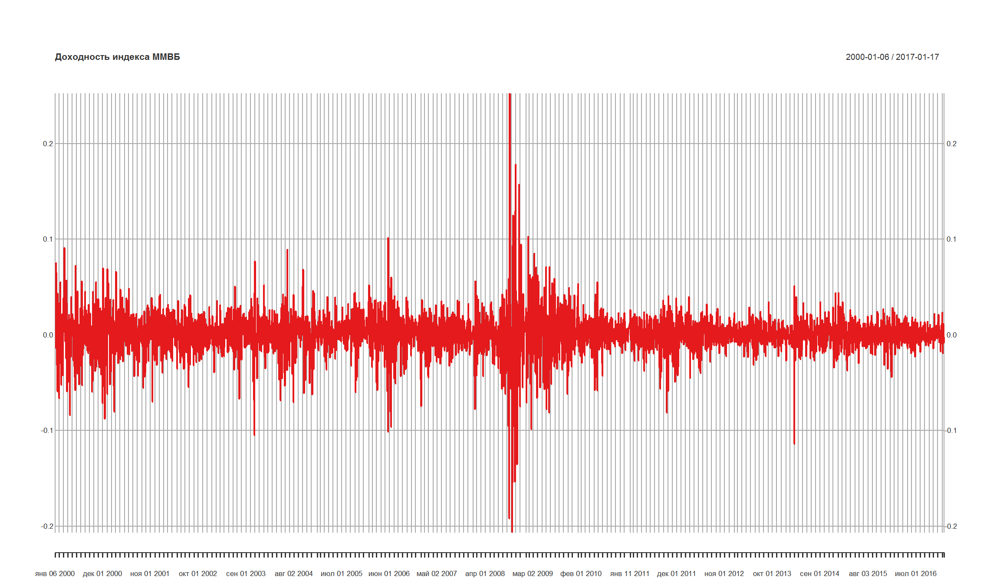
t.test(MICEX.rtn) # тестируем среднее доходнстей
One Sample t-test
data: MICEX.rtn
t = 2.1432, df = 3998, p-value = 0.03216
alternative hypothesis: true mean is not equal to 0
95 percent confidence interval:
5.931611e-05 1.332710e-03
sample estimates:
mean of x
0.0006960131
Cудя по t-тесту, мы отклоняем гипотезу о том, что среднее доходности равно 0.
AutoRegressive Conditional Heteroskedastic (ARCH) модель
- Мы знаем, что модели ARMA не позволяют моделировать CH-эффект, однако почему не попробовать моделировать дисперсию серии с помощью ARMA? Это и есть базовый принцип ARCH.
Пусть временной ряд \({\epsilon_t}\) имеет следующий вид:
\[ \epsilon_t = \sigma_t w_t \] где \(w_t\) – белый шум с нулевым средним и единичной дисперсией, а часть \(\sigma_t^2\) имеет вид:
\[\sigma_t^2 = a_0 + a_1 \epsilon_{t-1}^2 \] \(a_0\) и \(a_1\) – это параметры модели, которые необходимо оценить.
В этом случае ряд \({\epsilon_t}\) является процессом ARCH(1). Можно записать модель в следующем виде:
\[\sigma_t^2 = w_t \sqrt{a_0 + a_1 \epsilon_{t-1}^2} \] \(a_0 >0\) и \(a_1 > 0\) для того, чтобы часть под корнем была больше 0. \(a_1<1\) для того, чтобы ряд оставался стационарным с конечной дисперсией.
Почему ARCH моделирует волатильность?
Немного математики:
\[ Var(\epsilon_t) = E[\epsilon_t^2] - (E[\epsilon_t])^2 = E[\epsilon_t^2] =E[w_t^2]E[a_0 + a_1 \epsilon_{t-1}^2]= \] \[=E[a_0 + a_1 \epsilon_{t-1}^2] = a_0 + a_1 Var(\epsilon_{t-1}) = a_0 + a_1 \epsilon_{t-1}^2 \] учитывая, что среднее \(w_t\) равно 0, а дисперсия – 1.
- Дисперсия ARCH(1) модели является AR(1)-процессом.
Когда можно использовать ARCH(1)?
- Мы использовали корелограмму доходностей для идентификации AR(1)-процесса. Точно также можно использовать корелограмму квадратов доходностей для идентификации ARCH(1)
- ARCH(1) необходимо использовать, если вы уже подобрали адекватную модель, которая “оставляет” после себя остатки, более или менее похожие на белый шум. То есть, сначала необходимо определить модель для среднего доходностей.
- ARCH(1) не имеет смысла использовать для серий, которые имеют сезонные и/или трендовые эффекты. Сначала “уберите” сезонность/тренд с помощью ARIMA (SARIMA), а после этого оценивайте ARCH.
Достоинства и недостатки ARCH
Достоинства:
- Модель может “создавать” кластеры волатильности
- Модель может “создавать” heavy tails
Недостатки:
- Модель трактует положительные и отрицательные шоки одинаковым образом с точки зрения влияния на волатильность. Эмпирические наблюдения и здравый смысл говорят нам, что эти шоки – различны.
- Модель ARCH накладывает достаточно сильные ограничения на значения коэффициентов модели. Это ограничивает возможности моделировать более высокие моменты (к примеру, избыточный эксцесс).
- Модель ARCH не дает возможность оценки источников шоков, это просто механистический способ оценки поведения условной дисперсии.
- Модель ARCH недооценивает волатильность, так как достаточно медленно реагирует на большие по значению шоки.
ARCH(p)
Модель ARCH порядка \(p\) имеет следующий вид:
\[\sigma_t^2 = w_t \sqrt{a_0 + \sum_{i=1}^{p} a_i \epsilon_{t-i}^2} \]
- Модель ARCH(p) – это моделирование дисперсии ряда как AR(p).
Тестирования ARCH-эффекта
Пусть уравнение для среднего выглядит следующим образом: \(a_t = r_t + \mu_t\). Мы можем использовать квадраты остатков (\(a_t^2\)), чтобы проверить серию на условную гетерокседастичность (ARCH-эффект). Есть два варианта теста:
- Использовать тест Льюнга-Бокса (Ljung-Box test) для серии \(\{a_t^2\}\) - мы проходили этот тест в ARMA-моделях
- Использовать тест множителей Лагранжа (см Engle (1982)). Этот тест эквивалентен обычному F-тесту на тестирование гипотезы (\(\alpha_i = 0\)) в уравнении:
\[ a_t^2 = \alpha _0 + \alpha_1 a_{t-1}^2 + ... + a_m \alpha{t-m}^2 + e_t, t = m +1, ..., T \] Код теста для R:
"archTest" <- function(rtn,m=10){
# Провести тест множителей Лагранжа для оценки ARCH-эффекта в ряде
# rtn: серия доходностей
# m: порядок AR
#
y=(rtn-mean(rtn))^2
T=length(rtn)
atsq=y[(m+1):T]
x=matrix(0,(T-m),m)
for (i in 1:m){
x[,i]=y[(m+1-i):(T-i)]
}
md=lm(atsq~x)
summary(md)
}
Проверка ARCH-эффекта для доходностей индекса ММВБ
y <- MICEX.rtn - mean(MICEX.rtn)
Box.test(y^2,lag=10,type='Ljung')
Box-Ljung test
data: y^2
X-squared = 1405.7, df = 10, p-value < 2.2e-16
Call:
lm(formula = atsq ~ x)
Residuals:
Min 1Q Median 3Q Max
-0.017239 -0.000241 -0.000107 0.000070 0.047522
Coefficients:
Estimate Std. Error t value Pr(>|t|)
(Intercept) 1.026e-04 2.683e-05 3.825 0.000133 ***
x1 4.505e-02 1.583e-02 2.846 0.004454 **
x2 3.754e-01 1.475e-02 25.453 < 2e-16 ***
x3 8.278e-02 1.589e-02 5.209 1.99e-07 ***
x4 -1.323e-01 1.570e-02 -8.427 < 2e-16 ***
x5 -8.213e-04 1.583e-02 -0.052 0.958628
x6 2.905e-02 1.560e-02 1.861 0.062773 .
x7 1.681e-01 1.560e-02 10.775 < 2e-16 ***
x8 2.000e-02 1.583e-02 1.263 0.206527
x9 -1.772e-01 1.569e-02 -11.296 < 2e-16 ***
x10 4.330e-02 1.588e-02 2.726 0.006444 **
x11 3.644e-01 1.475e-02 24.712 < 2e-16 ***
x12 -6.380e-02 1.581e-02 -4.035 5.57e-05 ***
---
Signif. codes: 0 '***' 0.001 '**' 0.01 '*' 0.05 '.' 0.1 ' ' 1
Residual standard error: 0.001543 on 3974 degrees of freedom
Multiple R-squared: 0.303, Adjusted R-squared: 0.3009
F-statistic: 144 on 12 and 3974 DF, p-value: < 2.2e-16
Оба теста указывают на присутствие ARCH-эффекта в серии
Определение порядка ARCH модели
- Мы можем использовать PACF квадратов доходностей, чтобы оценить порядок ARCH модели.
arma11 <- Arima(MICEX.rtn, order=c(1, 0, 1))
Pacf(resid(arma11)^2)
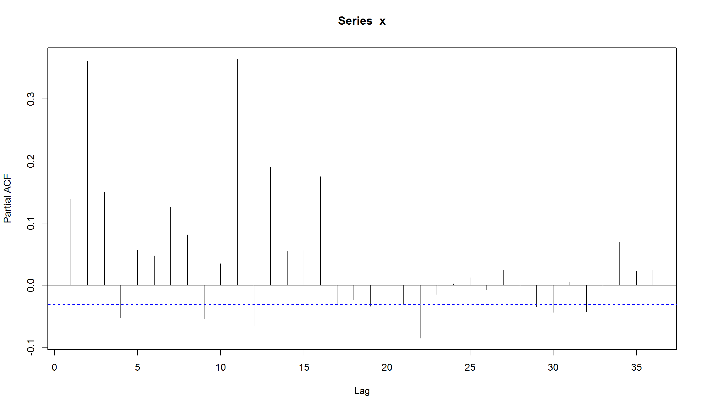
Как видно, требуется достаточно много лагов (порядок модели), чтобы использовать ARCH.
Симулирование AR(1) + ARCH(1)
n = 10200
e = rnorm(n)
a = e
y = e
sig2 = e^2
omega = 1
alpha = 0.55
#параметры для AR
phi = 0.8
mu = 0.1
omega/(1-alpha) # unconditional st dev
[1] 2.222222
[1] 1.490712
set.seed("1234")
for (t in 2:n)
{
a[t] = sqrt(sig2[t])*e[t]
y[t] = mu + phi*(y[t-1]-mu) + a[t]
sig2[t+1] = omega + alpha * a[t]^2
}
par(mfrow=c(2,4))
plot(e[10001:n],type="l",xlab="t",ylab=expression(epsilon),main="(a) белый шум")
plot(sqrt(sig2[10001:n]),type="l",xlab="t",ylab=expression(sigma[t]),
main="(b) условная дисперсия")
plot(a[10001:n],type="l",xlab="t",ylab="a",main="(c) ARCH")
plot(y[10001:n],type="l",xlab="t",ylab="y",main="(d) AR+ARCH")
acf(a[10001:n],main="(e) ARCH")
acf(a[10001:n]^2,main="(f) ARCH squared")
acf(y[10001:n],main="(g) AR+ARCH")
acf(y[10001:n]^2,main="(h) AR+ARCH squared")

Оценка ARCH-модели
Оценим ARCH(1)-модель для доходностей ММВБ при допущении о том, что среднее доходностей является константой с помощью функции garchFit из пакета fGarch.
library(fGarch)
arch1 <- garchFit(~1+garch(1,0),data=MICEX.rtn,trace=F)
summary(arch1)
Title:
GARCH Modelling
Call:
garchFit(formula = ~1 + garch(1, 0), data = MICEX.rtn, trace = F)
Mean and Variance Equation:
data ~ 1 + garch(1, 0)
<environment: 0x0000000019e27870>
[data = MICEX.rtn]
Conditional Distribution:
norm
Coefficient(s):
mu omega alpha1
0.00119656 0.00025892 0.45498315
Std. Errors:
based on Hessian
Error Analysis:
Estimate Std. Error t value Pr(>|t|)
mu 1.197e-03 2.746e-04 4.357 1.32e-05 ***
omega 2.589e-04 8.056e-06 32.142 < 2e-16 ***
alpha1 4.550e-01 3.584e-02 12.695 < 2e-16 ***
---
Signif. codes: 0 '***' 0.001 '**' 0.01 '*' 0.05 '.' 0.1 ' ' 1
Log Likelihood:
10174.52 normalized: 2.544267
Description:
Sun Jan 15 19:35:16 2017 by user: Marcel
Standardised Residuals Tests:
Statistic p-Value
Jarque-Bera Test R Chi^2 10257.77 0
Shapiro-Wilk Test R W 0.9257514 0
Ljung-Box Test R Q(10) 11.12232 0.3480677
Ljung-Box Test R Q(15) 16.31163 0.3616485
Ljung-Box Test R Q(20) 22.61219 0.3082353
Ljung-Box Test R^2 Q(10) 418.338 0
Ljung-Box Test R^2 Q(15) 977.8696 0
Ljung-Box Test R^2 Q(20) 1206.211 0
LM Arch Test R TR^2 387.6945 0
Information Criterion Statistics:
AIC BIC SIC HQIC
-5.087033 -5.082312 -5.087034 -5.085360
res <- residuals(arch1,standardize=T) # используем стандартизированные остатки
Acf(res,lag=20)
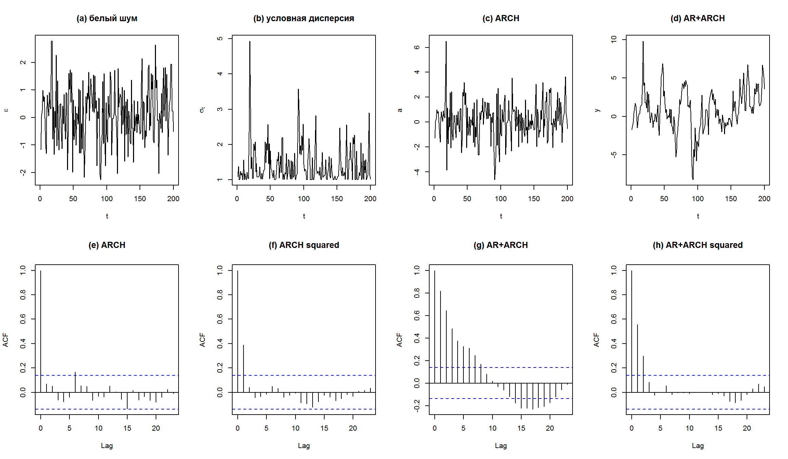
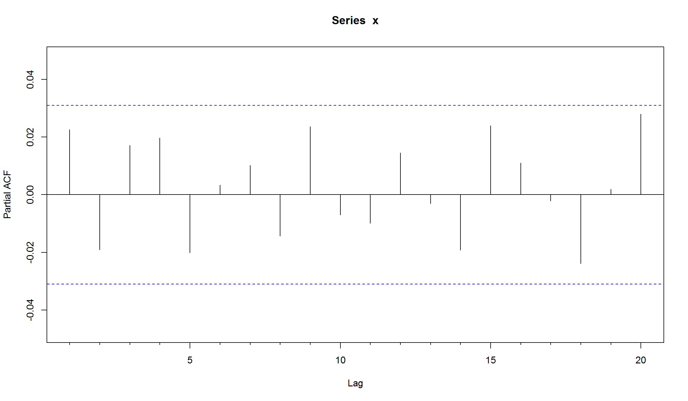
# plot(arch1) диагностические графики для модели
Оцененная модель имеет вид:
\[ r_t = 0.001197 + a_t, \sigma^2 = 0.0002589 + 0.455 a_{t-1}^2 \] Все коэффициенты являются значимыми. ACF и PACF указывают на отсутствие автокорреляции в остатках
Та же самая модель с t-распределением Стьюдента для моделирования шоков серии.
arch1_student <- garchFit(~1+garch(1,0),data=MICEX.rtn,trace=F, cond.dist="std")
summary(arch1_student)
Title:
GARCH Modelling
Call:
garchFit(formula = ~1 + garch(1, 0), data = MICEX.rtn, cond.dist = "std",
trace = F)
Mean and Variance Equation:
data ~ 1 + garch(1, 0)
<environment: 0x0000000018e29ff0>
[data = MICEX.rtn]
Conditional Distribution:
std
Coefficient(s):
mu omega alpha1 shape
0.00134266 0.00029045 0.35420473 3.49328674
Std. Errors:
based on Hessian
Error Analysis:
Estimate Std. Error t value Pr(>|t|)
mu 1.343e-03 2.306e-04 5.823 5.78e-09 ***
omega 2.904e-04 1.957e-05 14.843 < 2e-16 ***
alpha1 3.542e-01 4.805e-02 7.371 1.69e-13 ***
shape 3.493e+00 2.067e-01 16.897 < 2e-16 ***
---
Signif. codes: 0 '***' 0.001 '**' 0.01 '*' 0.05 '.' 0.1 ' ' 1
Log Likelihood:
10581.63 normalized: 2.64607
Description:
Sun Jan 15 19:35:17 2017 by user: Marcel
Standardised Residuals Tests:
Statistic p-Value
Jarque-Bera Test R Chi^2 11792.81 0
Shapiro-Wilk Test R W 0.9233456 0
Ljung-Box Test R Q(10) 11.93259 0.2895933
Ljung-Box Test R Q(15) 18.2748 0.248494
Ljung-Box Test R Q(20) 26.03371 0.1647016
Ljung-Box Test R^2 Q(10) 502.87 0
Ljung-Box Test R^2 Q(15) 1183.988 0
Ljung-Box Test R^2 Q(20) 1446.328 0
LM Arch Test R TR^2 465.7959 0
Information Criterion Statistics:
AIC BIC SIC HQIC
-5.290140 -5.283844 -5.290142 -5.287908
res <- residuals(arch1_student,standardize=T) # используем стандартизированные остатки
Acf(res,lag=20)
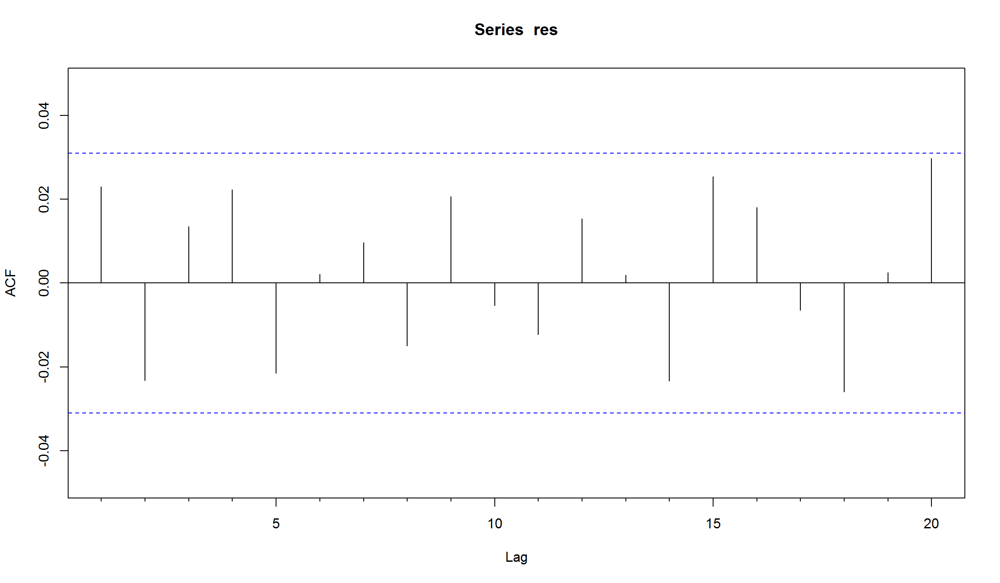
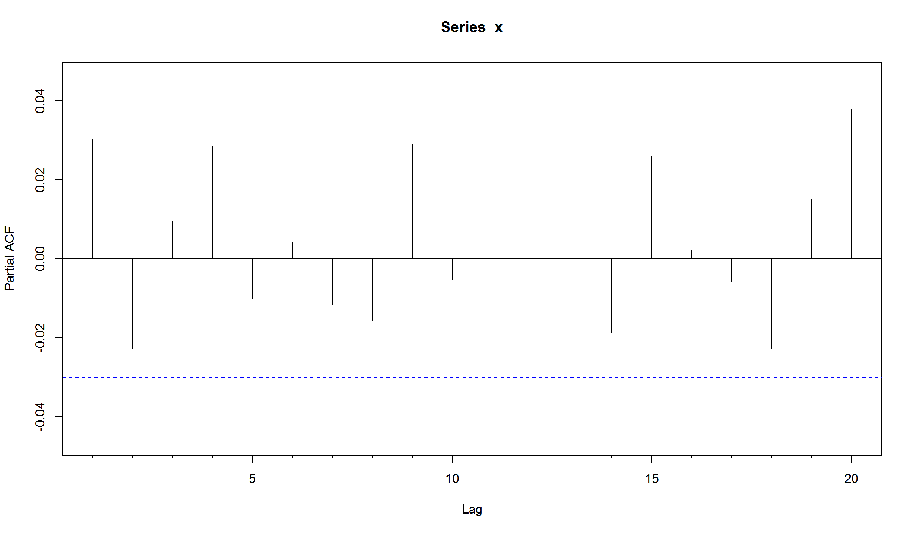
Использование распределения с более “тяжелыми хвостами” несколько уменьшило ARCH-коэффициента.
Определение GARCH
- Если мы используем AR-модель для дисперсии, почему не использовать и MA-модель? Это и есть основа GARCH.
Временной ряд \({\epsilon_t}\) имеет следующий вид:
\[ \epsilon_t = \sigma_t w_t \]
где \(w_t\) – белый шум с нулевым средним и единичной дисперсией, а часть \(\sigma_t^2\) имеет вид:
\[\sigma_t^2 = a_0 +\sum_{i=1}^{q} a_i \epsilon_{t-i}^2+ \sum_{j=1}^{p} \beta_i \sigma_{t-j}^2 \] где \(\alpha_i\) и \(\beta_j\) – это параметры модели.
- GARCH – это ARMA эквивалент для дисперсии серии.
Симулирование GARCH(1,1)
GARCH(1,1) будет иметь следующий вид: \[\epsilon_t = \sigma_t w_t \] \[a_0 + a_1 \epsilon_{t-1}^2 + \beta_1 \sigma_{t-1}^2 \]
set.seed(2)
a0 <- 0.2
a1 <- 0.5
b1 <- 0.3
w <- rnorm(10000) ## белый шум
eps <- rep(0, 10000) ## исходный ряд
sigsq <- rep(0, 10000) ## компонента GARCH
for (i in 2:10000) {
sigsq[i] <- a0 + a1 * (eps[i-1]^2) + b1 * sigsq[i-1]
eps[i] <- w[i]*sqrt(sigsq[i])
}
- построим корелограмму получившегося ряда
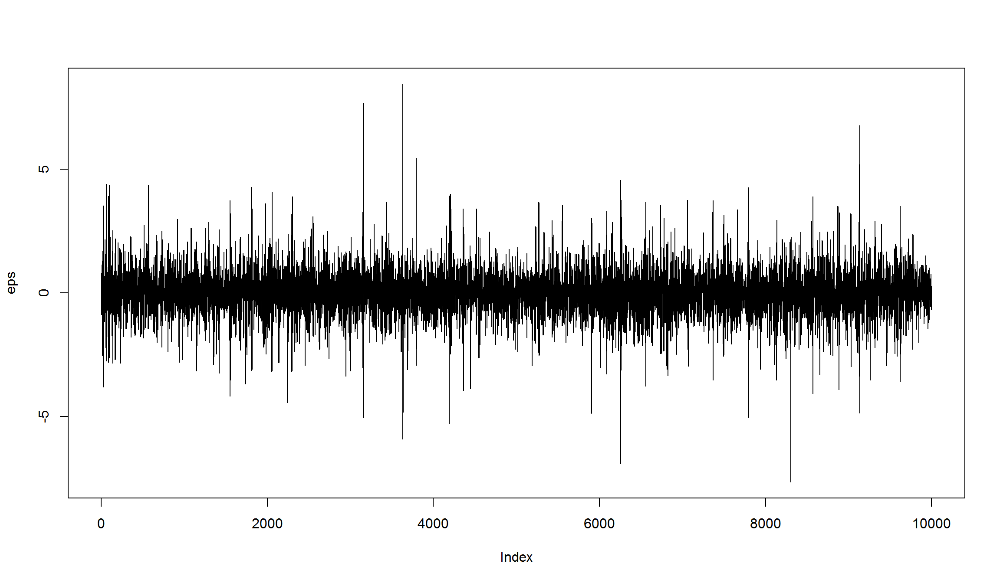
вроде бы ничего необычного. Но если мы построим корелограмму квадратов рядов, то увидим выраженное убывание на последующих лагах
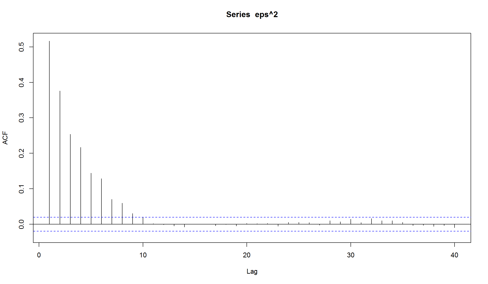
Оценка симулированной GARCH(1,1)-модели
Мы будем использовать функцию garch из пакета tseries
library(tseries)
eps.garch <- garch(eps, trace=FALSE)
confint(eps.garch)
2.5 % 97.5 %
a0 0.744012789 0.813029721
a1 0.185495966 0.216790735
b1 -0.005416026 0.005416026
- Коэффициенты отличаются значимым образом от 0.
- Доверительные интервалы включат “настоящие” значения коэффициентов
Оценка GARCH(1,1) для индекса ММВБ
require(tseries)
garch11 <- garchFit(~1+garch(1,1),data=MICEX.rtn,trace=F)
summary(garch11)
Title:
GARCH Modelling
Call:
garchFit(formula = ~1 + garch(1, 1), data = MICEX.rtn, trace = F)
Mean and Variance Equation:
data ~ 1 + garch(1, 1)
<environment: 0x00000000199820a0>
[data = MICEX.rtn]
Conditional Distribution:
norm
Coefficient(s):
mu omega alpha1 beta1
1.0817e-03 7.4051e-06 1.0176e-01 8.7826e-01
Std. Errors:
based on Hessian
Error Analysis:
Estimate Std. Error t value Pr(>|t|)
mu 1.082e-03 2.289e-04 4.727 2.28e-06 ***
omega 7.405e-06 1.218e-06 6.081 1.19e-09 ***
alpha1 1.018e-01 1.021e-02 9.962 < 2e-16 ***
beta1 8.783e-01 1.141e-02 76.986 < 2e-16 ***
---
Signif. codes: 0 '***' 0.001 '**' 0.01 '*' 0.05 '.' 0.1 ' ' 1
Log Likelihood:
10737.09 normalized: 2.684945
Description:
Sun Jan 15 19:35:18 2017 by user: Marcel
Standardised Residuals Tests:
Statistic p-Value
Jarque-Bera Test R Chi^2 3767.382 0
Shapiro-Wilk Test R W 0.9722081 0
Ljung-Box Test R Q(10) 10.84526 0.3697003
Ljung-Box Test R Q(15) 12.24439 0.6604442
Ljung-Box Test R Q(20) 15.78142 0.7300884
Ljung-Box Test R^2 Q(10) 5.88271 0.8250193
Ljung-Box Test R^2 Q(15) 7.901586 0.9276675
Ljung-Box Test R^2 Q(20) 10.08477 0.9666087
LM Arch Test R TR^2 6.179823 0.9067471
Information Criterion Statistics:
AIC BIC SIC HQIC
-5.367889 -5.361594 -5.367891 -5.365657
mu omega alpha1 beta1
1.081730e-03 7.405122e-06 1.017647e-01 8.782637e-01
v11=volatility(garch11)
index(MICEX.rtn)
[1] "2001-01-04" "2001-01-05" "2001-01-09" "2001-01-10" "2001-01-11"
[6] "2001-01-12" "2001-01-15" "2001-01-16" "2001-01-17" "2001-01-18"
[11] "2001-01-19" "2001-01-22" "2001-01-23" "2001-01-24" "2001-01-25"
[16] "2001-01-26" "2001-01-29" "2001-01-30" "2001-01-31" "2001-02-01"
[21] "2001-02-02" "2001-02-05" "2001-02-06" "2001-02-07" "2001-02-08"
[26] "2001-02-09" "2001-02-12" "2001-02-13" "2001-02-14" "2001-02-15"
[31] "2001-02-16" "2001-02-19" "2001-02-20" "2001-02-21" "2001-02-22"
[36] "2001-02-23" "2001-02-26" "2001-02-27" "2001-02-28" "2001-03-01"
[41] "2001-03-02" "2001-03-05" "2001-03-06" "2001-03-07" "2001-03-11"
[46] "2001-03-12" "2001-03-13" "2001-03-14" "2001-03-15" "2001-03-16"
[51] "2001-03-19" "2001-03-20" "2001-03-21" "2001-03-22" "2001-03-23"
[56] "2001-03-26" "2001-03-27" "2001-03-28" "2001-03-29" "2001-03-30"
[61] "2001-04-02" "2001-04-03" "2001-04-04" "2001-04-05" "2001-04-06"
[66] "2001-04-09" "2001-04-10" "2001-04-11" "2001-04-12" "2001-04-13"
[71] "2001-04-16" "2001-04-17" "2001-04-18" "2001-04-19" "2001-04-20"
[76] "2001-04-23" "2001-04-24" "2001-04-25" "2001-04-26" "2001-04-27"
[81] "2001-04-28" "2001-05-03" "2001-05-04" "2001-05-07" "2001-05-08"
[86] "2001-05-10" "2001-05-11" "2001-05-14" "2001-05-15" "2001-05-16"
[91] "2001-05-17" "2001-05-18" "2001-05-21" "2001-05-22" "2001-05-23"
[96] "2001-05-24" "2001-05-25" "2001-05-28" "2001-05-29" "2001-05-30"
[101] "2001-05-31" "2001-06-01" "2001-06-04" "2001-06-05" "2001-06-06"
[106] "2001-06-07" "2001-06-08" "2001-06-09" "2001-06-13" "2001-06-14"
[111] "2001-06-15" "2001-06-18" "2001-06-19" "2001-06-20" "2001-06-21"
[116] "2001-06-22" "2001-06-25" "2001-06-26" "2001-06-27" "2001-06-28"
[121] "2001-06-29" "2001-07-02" "2001-07-03" "2001-07-04" "2001-07-05"
[126] "2001-07-06" "2001-07-09" "2001-07-10" "2001-07-11" "2001-07-12"
[131] "2001-07-13" "2001-07-16" "2001-07-17" "2001-07-18" "2001-07-19"
[136] "2001-07-20" "2001-07-23" "2001-07-24" "2001-07-25" "2001-07-26"
[141] "2001-07-27" "2001-07-30" "2001-07-31" "2001-08-01" "2001-08-02"
[146] "2001-08-03" "2001-08-06" "2001-08-07" "2001-08-08" "2001-08-09"
[151] "2001-08-10" "2001-08-13" "2001-08-14" "2001-08-15" "2001-08-16"
[156] "2001-08-17" "2001-08-20" "2001-08-21" "2001-08-22" "2001-08-23"
[161] "2001-08-24" "2001-08-27" "2001-08-28" "2001-08-29" "2001-08-30"
[166] "2001-08-31" "2001-09-03" "2001-09-04" "2001-09-05" "2001-09-06"
[171] "2001-09-07" "2001-09-10" "2001-09-11" "2001-09-12" "2001-09-13"
[176] "2001-09-14" "2001-09-17" "2001-09-18" "2001-09-19" "2001-09-20"
[181] "2001-09-21" "2001-09-24" "2001-09-25" "2001-09-26" "2001-09-27"
[186] "2001-09-28" "2001-10-01" "2001-10-02" "2001-10-03" "2001-10-04"
[191] "2001-10-05" "2001-10-08" "2001-10-09" "2001-10-10" "2001-10-11"
[196] "2001-10-12" "2001-10-15" "2001-10-16" "2001-10-17" "2001-10-18"
[201] "2001-10-19" "2001-10-22" "2001-10-23" "2001-10-24" "2001-10-25"
[206] "2001-10-26" "2001-10-29" "2001-10-30" "2001-10-31" "2001-11-01"
[211] "2001-11-02" "2001-11-05" "2001-11-06" "2001-11-08" "2001-11-09"
[216] "2001-11-12" "2001-11-13" "2001-11-14" "2001-11-15" "2001-11-16"
[221] "2001-11-19" "2001-11-20" "2001-11-21" "2001-11-22" "2001-11-23"
[226] "2001-11-26" "2001-11-27" "2001-11-28" "2001-11-29" "2001-11-30"
[231] "2001-12-03" "2001-12-04" "2001-12-05" "2001-12-06" "2001-12-07"
[236] "2001-12-10" "2001-12-11" "2001-12-13" "2001-12-14" "2001-12-17"
[241] "2001-12-18" "2001-12-19" "2001-12-20" "2001-12-21" "2001-12-24"
[246] "2001-12-25" "2001-12-26" "2001-12-27" "2001-12-28" "2001-12-29"
[251] "2002-01-03" "2002-01-04" "2002-01-08" "2002-01-09" "2002-01-10"
[256] "2002-01-11" "2002-01-14" "2002-01-15" "2002-01-16" "2002-01-17"
[261] "2002-01-18" "2002-01-21" "2002-01-22" "2002-01-23" "2002-01-24"
[266] "2002-01-25" "2002-01-28" "2002-01-29" "2002-01-30" "2002-01-31"
[271] "2002-02-01" "2002-02-04" "2002-02-05" "2002-02-06" "2002-02-07"
[276] "2002-02-08" "2002-02-11" "2002-02-12" "2002-02-13" "2002-02-14"
[281] "2002-02-15" "2002-02-18" "2002-02-19" "2002-02-20" "2002-02-21"
[286] "2002-02-22" "2002-02-26" "2002-02-27" "2002-02-28" "2002-03-01"
[291] "2002-03-04" "2002-03-05" "2002-03-06" "2002-03-07" "2002-03-11"
[296] "2002-03-12" "2002-03-13" "2002-03-14" "2002-03-15" "2002-03-18"
[301] "2002-03-19" "2002-03-20" "2002-03-21" "2002-03-22" "2002-03-25"
[306] "2002-03-26" "2002-03-27" "2002-03-28" "2002-03-29" "2002-04-01"
[311] "2002-04-02" "2002-04-03" "2002-04-04" "2002-04-05" "2002-04-08"
[316] "2002-04-09" "2002-04-10" "2002-04-11" "2002-04-12" "2002-04-15"
[321] "2002-04-16" "2002-04-17" "2002-04-18" "2002-04-19" "2002-04-22"
[326] "2002-04-23" "2002-04-24" "2002-04-25" "2002-04-26" "2002-04-27"
[331] "2002-04-29" "2002-04-30" "2002-05-06" "2002-05-07" "2002-05-08"
[336] "2002-05-13" "2002-05-14" "2002-05-15" "2002-05-16" "2002-05-17"
[341] "2002-05-18" "2002-05-20" "2002-05-21" "2002-05-22" "2002-05-23"
[346] "2002-05-24" "2002-05-27" "2002-05-29" "2002-05-30" "2002-05-31"
[351] "2002-06-03" "2002-06-04" "2002-06-05" "2002-06-06" "2002-06-07"
[356] "2002-06-10" "2002-06-11" "2002-06-13" "2002-06-14" "2002-06-17"
[361] "2002-06-18" "2002-06-19" "2002-06-20" "2002-06-21" "2002-06-24"
[366] "2002-06-25" "2002-06-26" "2002-06-27" "2002-06-28" "2002-07-01"
[371] "2002-07-02" "2002-07-03" "2002-07-04" "2002-07-05" "2002-07-08"
[376] "2002-07-09" "2002-07-10" "2002-07-11" "2002-07-12" "2002-07-15"
[381] "2002-07-16" "2002-07-17" "2002-07-18" "2002-07-19" "2002-07-22"
[386] "2002-07-23" "2002-07-24" "2002-07-25" "2002-07-26" "2002-07-29"
[391] "2002-07-30" "2002-07-31" "2002-08-01" "2002-08-02" "2002-08-05"
[396] "2002-08-06" "2002-08-07" "2002-08-08" "2002-08-09" "2002-08-12"
[401] "2002-08-13" "2002-08-14" "2002-08-15" "2002-08-16" "2002-08-19"
[406] "2002-08-20" "2002-08-21" "2002-08-22" "2002-08-23" "2002-08-26"
[411] "2002-08-27" "2002-08-28" "2002-08-29" "2002-08-30" "2002-09-02"
[416] "2002-09-03" "2002-09-04" "2002-09-05" "2002-09-06" "2002-09-09"
[421] "2002-09-10" "2002-09-11" "2002-09-12" "2002-09-13" "2002-09-16"
[426] "2002-09-17" "2002-09-18" "2002-09-19" "2002-09-20" "2002-09-23"
[431] "2002-09-24" "2002-09-25" "2002-09-26" "2002-09-27" "2002-09-30"
[436] "2002-10-01" "2002-10-02" "2002-10-03" "2002-10-04" "2002-10-07"
[441] "2002-10-08" "2002-10-09" "2002-10-10" "2002-10-11" "2002-10-14"
[446] "2002-10-15" "2002-10-16" "2002-10-17" "2002-10-18" "2002-10-21"
[451] "2002-10-22" "2002-10-23" "2002-10-24" "2002-10-25" "2002-10-28"
[456] "2002-10-29" "2002-10-30" "2002-10-31" "2002-11-01" "2002-11-04"
[461] "2002-11-05" "2002-11-06" "2002-11-10" "2002-11-11" "2002-11-12"
[466] "2002-11-13" "2002-11-14" "2002-11-15" "2002-11-18" "2002-11-19"
[471] "2002-11-20" "2002-11-21" "2002-11-22" "2002-11-25" "2002-11-26"
[476] "2002-11-27" "2002-11-28" "2002-11-29" "2002-12-02" "2002-12-03"
[481] "2002-12-04" "2002-12-05" "2002-12-06" "2002-12-09" "2002-12-10"
[486] "2002-12-11" "2002-12-15" "2002-12-16" "2002-12-17" "2002-12-18"
[491] "2002-12-19" "2002-12-20" "2002-12-23" "2002-12-24" "2002-12-25"
[496] "2002-12-26" "2002-12-27" "2002-12-30" "2002-12-31" "2003-01-04"
[501] "2003-01-05" "2003-01-08" "2003-01-09" "2003-01-10" "2003-01-13"
[506] "2003-01-14" "2003-01-15" "2003-01-16" "2003-01-17" "2003-01-20"
[511] "2003-01-21" "2003-01-22" "2003-01-23" "2003-01-24" "2003-01-27"
[516] "2003-01-28" "2003-01-29" "2003-01-30" "2003-01-31" "2003-02-03"
[521] "2003-02-04" "2003-02-05" "2003-02-06" "2003-02-07" "2003-02-10"
[526] "2003-02-11" "2003-02-12" "2003-02-13" "2003-02-14" "2003-02-17"
[531] "2003-02-18" "2003-02-19" "2003-02-20" "2003-02-21" "2003-02-25"
[536] "2003-02-26" "2003-02-27" "2003-02-28" "2003-03-03" "2003-03-04"
[541] "2003-03-05" "2003-03-06" "2003-03-07" "2003-03-11" "2003-03-12"
[546] "2003-03-13" "2003-03-14" "2003-03-17" "2003-03-18" "2003-03-19"
[551] "2003-03-20" "2003-03-21" "2003-03-24" "2003-03-25" "2003-03-26"
[556] "2003-03-27" "2003-03-28" "2003-03-31" "2003-04-01" "2003-04-02"
[561] "2003-04-03" "2003-04-04" "2003-04-07" "2003-04-08" "2003-04-09"
[566] "2003-04-10" "2003-04-11" "2003-04-14" "2003-04-15" "2003-04-16"
[571] "2003-04-17" "2003-04-18" "2003-04-21" "2003-04-22" "2003-04-23"
[576] "2003-04-24" "2003-04-25" "2003-04-28" "2003-04-29" "2003-04-30"
[581] "2003-05-05" "2003-05-06" "2003-05-07" "2003-05-08" "2003-05-12"
[586] "2003-05-13" "2003-05-14" "2003-05-15" "2003-05-16" "2003-05-19"
[591] "2003-05-20" "2003-05-21" "2003-05-22" "2003-05-23" "2003-05-26"
[596] "2003-05-27" "2003-05-28" "2003-05-29" "2003-05-30" "2003-06-02"
[601] "2003-06-03" "2003-06-04" "2003-06-05" "2003-06-06" "2003-06-09"
[606] "2003-06-10" "2003-06-11" "2003-06-16" "2003-06-17" "2003-06-18"
[611] "2003-06-19" "2003-06-20" "2003-06-21" "2003-06-23" "2003-06-24"
[616] "2003-06-25" "2003-06-26" "2003-06-27" "2003-06-30" "2003-07-01"
[621] "2003-07-02" "2003-07-03" "2003-07-04" "2003-07-07" "2003-07-08"
[626] "2003-07-09" "2003-07-10" "2003-07-11" "2003-07-14" "2003-07-15"
[631] "2003-07-16" "2003-07-17" "2003-07-18" "2003-07-21" "2003-07-22"
[636] "2003-07-23" "2003-07-24" "2003-07-25" "2003-07-28" "2003-07-29"
[641] "2003-07-30" "2003-07-31" "2003-08-01" "2003-08-04" "2003-08-05"
[646] "2003-08-06" "2003-08-07" "2003-08-08" "2003-08-11" "2003-08-12"
[651] "2003-08-13" "2003-08-14" "2003-08-15" "2003-08-18" "2003-08-19"
[656] "2003-08-20" "2003-08-21" "2003-08-22" "2003-08-25" "2003-08-26"
[661] "2003-08-27" "2003-08-28" "2003-08-29" "2003-09-01" "2003-09-02"
[666] "2003-09-03" "2003-09-04" "2003-09-05" "2003-09-08" "2003-09-09"
[671] "2003-09-10" "2003-09-11" "2003-09-12" "2003-09-15" "2003-09-16"
[676] "2003-09-17" "2003-09-18" "2003-09-19" "2003-09-22" "2003-09-23"
[681] "2003-09-24" "2003-09-25" "2003-09-26" "2003-09-29" "2003-09-30"
[686] "2003-10-01" "2003-10-02" "2003-10-03" "2003-10-06" "2003-10-07"
[691] "2003-10-08" "2003-10-09" "2003-10-10" "2003-10-13" "2003-10-14"
[696] "2003-10-15" "2003-10-16" "2003-10-17" "2003-10-20" "2003-10-21"
[701] "2003-10-22" "2003-10-23" "2003-10-24" "2003-10-27" "2003-10-28"
[706] "2003-10-29" "2003-10-30" "2003-10-31" "2003-11-03" "2003-11-04"
[711] "2003-11-05" "2003-11-06" "2003-11-10" "2003-11-11" "2003-11-12"
[716] "2003-11-13" "2003-11-14" "2003-11-17" "2003-11-18" "2003-11-19"
[721] "2003-11-20" "2003-11-21" "2003-11-24" "2003-11-25" "2003-11-26"
[726] "2003-11-27" "2003-11-28" "2003-12-01" "2003-12-02" "2003-12-03"
[731] "2003-12-04" "2003-12-05" "2003-12-08" "2003-12-09" "2003-12-10"
[736] "2003-12-11" "2003-12-15" "2003-12-16" "2003-12-17" "2003-12-18"
[741] "2003-12-19" "2003-12-22" "2003-12-23" "2003-12-24" "2003-12-25"
[746] "2003-12-26" "2003-12-29" "2003-12-30" "2004-01-05" "2004-01-06"
[751] "2004-01-08" "2004-01-09" "2004-01-12" "2004-01-13" "2004-01-14"
[756] "2004-01-15" "2004-01-16" "2004-01-19" "2004-01-20" "2004-01-21"
[761] "2004-01-22" "2004-01-23" "2004-01-26" "2004-01-27" "2004-01-28"
[766] "2004-01-29" "2004-01-30" "2004-02-02" "2004-02-03" "2004-02-04"
[771] "2004-02-05" "2004-02-06" "2004-02-09" "2004-02-10" "2004-02-11"
[776] "2004-02-12" "2004-02-13" "2004-02-16" "2004-02-17" "2004-02-18"
[781] "2004-02-19" "2004-02-20" "2004-02-24" "2004-02-25" "2004-02-26"
[786] "2004-02-27" "2004-03-01" "2004-03-02" "2004-03-03" "2004-03-04"
[791] "2004-03-05" "2004-03-09" "2004-03-10" "2004-03-11" "2004-03-12"
[796] "2004-03-15" "2004-03-16" "2004-03-17" "2004-03-18" "2004-03-19"
[801] "2004-03-22" "2004-03-23" "2004-03-24" "2004-03-25" "2004-03-26"
[806] "2004-03-29" "2004-03-30" "2004-03-31" "2004-04-01" "2004-04-02"
[811] "2004-04-05" "2004-04-06" "2004-04-07" "2004-04-08" "2004-04-09"
[816] "2004-04-12" "2004-04-13" "2004-04-14" "2004-04-15" "2004-04-16"
[821] "2004-04-19" "2004-04-20" "2004-04-21" "2004-04-22" "2004-04-23"
[826] "2004-04-26" "2004-04-27" "2004-04-28" "2004-04-29" "2004-04-30"
[831] "2004-05-05" "2004-05-06" "2004-05-07" "2004-05-11" "2004-05-12"
[836] "2004-05-13" "2004-05-14" "2004-05-17" "2004-05-18" "2004-05-19"
[841] "2004-05-20" "2004-05-21" "2004-05-24" "2004-05-25" "2004-05-26"
[846] "2004-05-27" "2004-05-28" "2004-05-31" "2004-06-01" "2004-06-02"
[851] "2004-06-03" "2004-06-04" "2004-06-07" "2004-06-08" "2004-06-09"
[856] "2004-06-10" "2004-06-11" "2004-06-15" "2004-06-16" "2004-06-17"
[861] "2004-06-18" "2004-06-21" "2004-06-22" "2004-06-23" "2004-06-24"
[866] "2004-06-25" "2004-06-28" "2004-06-29" "2004-06-30" "2004-07-01"
[871] "2004-07-02" "2004-07-05" "2004-07-06" "2004-07-07" "2004-07-08"
[876] "2004-07-09" "2004-07-12" "2004-07-13" "2004-07-14" "2004-07-15"
[881] "2004-07-16" "2004-07-19" "2004-07-20" "2004-07-21" "2004-07-22"
[886] "2004-07-23" "2004-07-26" "2004-07-27" "2004-07-28" "2004-07-29"
[891] "2004-07-30" "2004-08-02" "2004-08-03" "2004-08-04" "2004-08-05"
[896] "2004-08-06" "2004-08-09" "2004-08-10" "2004-08-11" "2004-08-12"
[901] "2004-08-13" "2004-08-16" "2004-08-17" "2004-08-18" "2004-08-19"
[906] "2004-08-20" "2004-08-23" "2004-08-24" "2004-08-25" "2004-08-26"
[911] "2004-08-27" "2004-08-30" "2004-08-31" "2004-09-01" "2004-09-02"
[916] "2004-09-03" "2004-09-06" "2004-09-07" "2004-09-08" "2004-09-09"
[921] "2004-09-10" "2004-09-13" "2004-09-14" "2004-09-15" "2004-09-16"
[926] "2004-09-17" "2004-09-20" "2004-09-21" "2004-09-22" "2004-09-23"
[931] "2004-09-24" "2004-09-27" "2004-09-28" "2004-09-29" "2004-09-30"
[936] "2004-10-01" "2004-10-04" "2004-10-05" "2004-10-06" "2004-10-07"
[941] "2004-10-08" "2004-10-11" "2004-10-12" "2004-10-13" "2004-10-14"
[946] "2004-10-15" "2004-10-18" "2004-10-19" "2004-10-20" "2004-10-21"
[951] "2004-10-22" "2004-10-25" "2004-10-26" "2004-10-27" "2004-10-28"
[956] "2004-10-29" "2004-11-01" "2004-11-02" "2004-11-03" "2004-11-04"
[961] "2004-11-05" "2004-11-09" "2004-11-10" "2004-11-11" "2004-11-12"
[966] "2004-11-15" "2004-11-16" "2004-11-17" "2004-11-18" "2004-11-19"
[971] "2004-11-22" "2004-11-23" "2004-11-24" "2004-11-25" "2004-11-26"
[976] "2004-11-29" "2004-11-30" "2004-12-01" "2004-12-02" "2004-12-03"
[981] "2004-12-06" "2004-12-07" "2004-12-08" "2004-12-09" "2004-12-10"
[986] "2004-12-14" "2004-12-15" "2004-12-16" "2004-12-17" "2004-12-20"
[991] "2004-12-21" "2004-12-22" "2004-12-23" "2004-12-24" "2004-12-27"
[996] "2004-12-28" "2004-12-29" "2004-12-30" "2005-01-11" "2005-01-12"
[1001] "2005-01-13" "2005-01-14" "2005-01-17" "2005-01-18" "2005-01-19"
[1006] "2005-01-20" "2005-01-21" "2005-01-24" "2005-01-25" "2005-01-26"
[1011] "2005-01-27" "2005-01-28" "2005-01-31" "2005-02-01" "2005-02-02"
[1016] "2005-02-03" "2005-02-04" "2005-02-07" "2005-02-08" "2005-02-09"
[1021] "2005-02-10" "2005-02-11" "2005-02-14" "2005-02-15" "2005-02-16"
[1026] "2005-02-17" "2005-02-18" "2005-02-21" "2005-02-22" "2005-02-24"
[1031] "2005-02-25" "2005-02-28" "2005-03-01" "2005-03-02" "2005-03-03"
[1036] "2005-03-04" "2005-03-05" "2005-03-09" "2005-03-10" "2005-03-11"
[1041] "2005-03-14" "2005-03-15" "2005-03-16" "2005-03-17" "2005-03-18"
[1046] "2005-03-21" "2005-03-22" "2005-03-23" "2005-03-24" "2005-03-25"
[1051] "2005-03-28" "2005-03-29" "2005-03-30" "2005-03-31" "2005-04-01"
[1056] "2005-04-04" "2005-04-05" "2005-04-06" "2005-04-07" "2005-04-08"
[1061] "2005-04-11" "2005-04-12" "2005-04-13" "2005-04-14" "2005-04-15"
[1066] "2005-04-18" "2005-04-19" "2005-04-20" "2005-04-21" "2005-04-22"
[1071] "2005-04-25" "2005-04-26" "2005-04-27" "2005-04-28" "2005-04-29"
[1076] "2005-05-03" "2005-05-04" "2005-05-05" "2005-05-06" "2005-05-11"
[1081] "2005-05-12" "2005-05-13" "2005-05-14" "2005-05-16" "2005-05-17"
[1086] "2005-05-18" "2005-05-19" "2005-05-20" "2005-05-23" "2005-05-24"
[1091] "2005-05-25" "2005-05-26" "2005-05-27" "2005-05-30" "2005-05-31"
[1096] "2005-06-01" "2005-06-02" "2005-06-03" "2005-06-06" "2005-06-07"
[1101] "2005-06-08" "2005-06-09" "2005-06-10" "2005-06-14" "2005-06-15"
[1106] "2005-06-16" "2005-06-17" "2005-06-20" "2005-06-21" "2005-06-22"
[1111] "2005-06-23" "2005-06-24" "2005-06-27" "2005-06-28" "2005-06-29"
[1116] "2005-06-30" "2005-07-01" "2005-07-04" "2005-07-05" "2005-07-06"
[1121] "2005-07-07" "2005-07-08" "2005-07-11" "2005-07-12" "2005-07-13"
[1126] "2005-07-14" "2005-07-15" "2005-07-18" "2005-07-19" "2005-07-20"
[1131] "2005-07-21" "2005-07-22" "2005-07-25" "2005-07-26" "2005-07-27"
[1136] "2005-07-28" "2005-07-29" "2005-08-01" "2005-08-02" "2005-08-03"
[1141] "2005-08-04" "2005-08-05" "2005-08-08" "2005-08-09" "2005-08-10"
[1146] "2005-08-11" "2005-08-12" "2005-08-15" "2005-08-16" "2005-08-17"
[1151] "2005-08-18" "2005-08-19" "2005-08-22" "2005-08-23" "2005-08-24"
[1156] "2005-08-25" "2005-08-26" "2005-08-29" "2005-08-30" "2005-08-31"
[1161] "2005-09-01" "2005-09-02" "2005-09-05" "2005-09-06" "2005-09-07"
[1166] "2005-09-08" "2005-09-09" "2005-09-12" "2005-09-13" "2005-09-14"
[1171] "2005-09-15" "2005-09-16" "2005-09-19" "2005-09-20" "2005-09-21"
[1176] "2005-09-22" "2005-09-23" "2005-09-26" "2005-09-27" "2005-09-28"
[1181] "2005-09-29" "2005-09-30" "2005-10-03" "2005-10-04" "2005-10-05"
[1186] "2005-10-06" "2005-10-07" "2005-10-10" "2005-10-11" "2005-10-12"
[1191] "2005-10-13" "2005-10-14" "2005-10-17" "2005-10-18" "2005-10-19"
[1196] "2005-10-20" "2005-10-21" "2005-10-24" "2005-10-25" "2005-10-26"
[1201] "2005-10-27" "2005-10-28" "2005-10-31" "2005-11-01" "2005-11-02"
[1206] "2005-11-03" "2005-11-07" "2005-11-08" "2005-11-09" "2005-11-10"
[1211] "2005-11-11" "2005-11-14" "2005-11-15" "2005-11-16" "2005-11-17"
[1216] "2005-11-18" "2005-11-21" "2005-11-22" "2005-11-23" "2005-11-24"
[1221] "2005-11-25" "2005-11-28" "2005-11-29" "2005-11-30" "2005-12-01"
[1226] "2005-12-02" "2005-12-05" "2005-12-06" "2005-12-07" "2005-12-08"
[1231] "2005-12-09" "2005-12-12" "2005-12-13" "2005-12-14" "2005-12-15"
[1236] "2005-12-16" "2005-12-19" "2005-12-20" "2005-12-21" "2005-12-22"
[1241] "2005-12-23" "2005-12-26" "2005-12-27" "2005-12-28" "2005-12-29"
[1246] "2005-12-30" "2006-01-10" "2006-01-11" "2006-01-12" "2006-01-13"
[1251] "2006-01-16" "2006-01-17" "2006-01-18" "2006-01-19" "2006-01-20"
[1256] "2006-01-23" "2006-01-24" "2006-01-25" "2006-01-26" "2006-01-27"
[1261] "2006-01-30" "2006-01-31" "2006-02-01" "2006-02-02" "2006-02-03"
[1266] "2006-02-06" "2006-02-07" "2006-02-08" "2006-02-09" "2006-02-10"
[1271] "2006-02-13" "2006-02-14" "2006-02-15" "2006-02-16" "2006-02-17"
[1276] "2006-02-20" "2006-02-21" "2006-02-22" "2006-02-26" "2006-02-27"
[1281] "2006-02-28" "2006-03-01" "2006-03-02" "2006-03-03" "2006-03-06"
[1286] "2006-03-07" "2006-03-09" "2006-03-10" "2006-03-13" "2006-03-14"
[1291] "2006-03-15" "2006-03-16" "2006-03-17" "2006-03-20" "2006-03-21"
[1296] "2006-03-22" "2006-03-23" "2006-03-24" "2006-03-27" "2006-03-28"
[1301] "2006-03-29" "2006-03-30" "2006-03-31" "2006-04-03" "2006-04-04"
[1306] "2006-04-05" "2006-04-06" "2006-04-07" "2006-04-10" "2006-04-11"
[1311] "2006-04-12" "2006-04-13" "2006-04-14" "2006-04-17" "2006-04-18"
[1316] "2006-04-19" "2006-04-20" "2006-04-21" "2006-04-24" "2006-04-25"
[1321] "2006-04-26" "2006-04-27" "2006-04-28" "2006-05-02" "2006-05-03"
[1326] "2006-05-04" "2006-05-05" "2006-05-06" "2006-05-10" "2006-05-11"
[1331] "2006-05-12" "2006-05-15" "2006-05-16" "2006-05-17" "2006-05-18"
[1336] "2006-05-19" "2006-05-22" "2006-05-23" "2006-05-24" "2006-05-25"
[1341] "2006-05-26" "2006-05-29" "2006-05-30" "2006-05-31" "2006-06-01"
[1346] "2006-06-02" "2006-06-05" "2006-06-06" "2006-06-07" "2006-06-08"
[1351] "2006-06-09" "2006-06-13" "2006-06-14" "2006-06-15" "2006-06-16"
[1356] "2006-06-19" "2006-06-20" "2006-06-21" "2006-06-22" "2006-06-23"
[1361] "2006-06-26" "2006-06-27" "2006-06-28" "2006-06-29" "2006-06-30"
[1366] "2006-07-03" "2006-07-04" "2006-07-05" "2006-07-06" "2006-07-07"
[1371] "2006-07-10" "2006-07-11" "2006-07-12" "2006-07-13" "2006-07-14"
[1376] "2006-07-17" "2006-07-18" "2006-07-19" "2006-07-20" "2006-07-21"
[1381] "2006-07-24" "2006-07-25" "2006-07-26" "2006-07-27" "2006-07-28"
[1386] "2006-07-31" "2006-08-01" "2006-08-02" "2006-08-03" "2006-08-04"
[1391] "2006-08-07" "2006-08-08" "2006-08-09" "2006-08-10" "2006-08-11"
[1396] "2006-08-14" "2006-08-15" "2006-08-16" "2006-08-17" "2006-08-18"
[1401] "2006-08-21" "2006-08-22" "2006-08-23" "2006-08-24" "2006-08-25"
[1406] "2006-08-28" "2006-08-29" "2006-08-30" "2006-08-31" "2006-09-01"
[1411] "2006-09-04" "2006-09-05" "2006-09-06" "2006-09-07" "2006-09-08"
[1416] "2006-09-11" "2006-09-12" "2006-09-13" "2006-09-14" "2006-09-15"
[1421] "2006-09-18" "2006-09-19" "2006-09-20" "2006-09-21" "2006-09-22"
[1426] "2006-09-25" "2006-09-26" "2006-09-27" "2006-09-28" "2006-09-29"
[1431] "2006-10-02" "2006-10-03" "2006-10-04" "2006-10-05" "2006-10-06"
[1436] "2006-10-09" "2006-10-10" "2006-10-11" "2006-10-12" "2006-10-13"
[1441] "2006-10-16" "2006-10-17" "2006-10-18" "2006-10-19" "2006-10-20"
[1446] "2006-10-23" "2006-10-24" "2006-10-25" "2006-10-26" "2006-10-27"
[1451] "2006-10-30" "2006-10-31" "2006-11-01" "2006-11-02" "2006-11-03"
[1456] "2006-11-07" "2006-11-08" "2006-11-09" "2006-11-10" "2006-11-13"
[1461] "2006-11-14" "2006-11-15" "2006-11-16" "2006-11-17" "2006-11-20"
[1466] "2006-11-21" "2006-11-22" "2006-11-23" "2006-11-24" "2006-11-27"
[1471] "2006-11-28" "2006-11-29" "2006-11-30" "2006-12-01" "2006-12-04"
[1476] "2006-12-05" "2006-12-06" "2006-12-07" "2006-12-08" "2006-12-11"
[1481] "2006-12-12" "2006-12-13" "2006-12-14" "2006-12-15" "2006-12-18"
[1486] "2006-12-19" "2006-12-20" "2006-12-21" "2006-12-22" "2006-12-25"
[1491] "2006-12-26" "2006-12-27" "2006-12-28" "2006-12-29" "2007-01-09"
[1496] "2007-01-10" "2007-01-11" "2007-01-12" "2007-01-15" "2007-01-16"
[1501] "2007-01-17" "2007-01-18" "2007-01-19" "2007-01-22" "2007-01-23"
[1506] "2007-01-24" "2007-01-25" "2007-01-26" "2007-01-29" "2007-01-30"
[1511] "2007-01-31" "2007-02-01" "2007-02-02" "2007-02-05" "2007-02-06"
[1516] "2007-02-07" "2007-02-08" "2007-02-09" "2007-02-12" "2007-02-13"
[1521] "2007-02-14" "2007-02-15" "2007-02-16" "2007-02-19" "2007-02-20"
[1526] "2007-02-21" "2007-02-22" "2007-02-26" "2007-02-27" "2007-02-28"
[1531] "2007-03-01" "2007-03-02" "2007-03-05" "2007-03-06" "2007-03-07"
[1536] "2007-03-09" "2007-03-12" "2007-03-13" "2007-03-14" "2007-03-15"
[1541] "2007-03-16" "2007-03-19" "2007-03-20" "2007-03-21" "2007-03-22"
[1546] "2007-03-23" "2007-03-26" "2007-03-27" "2007-03-28" "2007-03-29"
[1551] "2007-03-30" "2007-04-02" "2007-04-03" "2007-04-04" "2007-04-05"
[1556] "2007-04-06" "2007-04-09" "2007-04-10" "2007-04-11" "2007-04-12"
[1561] "2007-04-13" "2007-04-16" "2007-04-17" "2007-04-18" "2007-04-19"
[1566] "2007-04-20" "2007-04-23" "2007-04-24" "2007-04-25" "2007-04-26"
[1571] "2007-04-27" "2007-04-28" "2007-05-02" "2007-05-03" "2007-05-04"
[1576] "2007-05-07" "2007-05-08" "2007-05-10" "2007-05-11" "2007-05-14"
[1581] "2007-05-15" "2007-05-16" "2007-05-17" "2007-05-18" "2007-05-21"
[1586] "2007-05-22" "2007-05-23" "2007-05-24" "2007-05-25" "2007-05-28"
[1591] "2007-05-29" "2007-05-30" "2007-05-31" "2007-06-01" "2007-06-04"
[1596] "2007-06-05" "2007-06-06" "2007-06-07" "2007-06-08" "2007-06-09"
[1601] "2007-06-13" "2007-06-14" "2007-06-15" "2007-06-18" "2007-06-19"
[1606] "2007-06-20" "2007-06-21" "2007-06-22" "2007-06-25" "2007-06-26"
[1611] "2007-06-27" "2007-06-28" "2007-06-29" "2007-07-02" "2007-07-03"
[1616] "2007-07-04" "2007-07-05" "2007-07-06" "2007-07-09" "2007-07-10"
[1621] "2007-07-11" "2007-07-12" "2007-07-13" "2007-07-16" "2007-07-17"
[1626] "2007-07-18" "2007-07-19" "2007-07-20" "2007-07-23" "2007-07-24"
[1631] "2007-07-25" "2007-07-26" "2007-07-27" "2007-07-30" "2007-07-31"
[1636] "2007-08-01" "2007-08-02" "2007-08-03" "2007-08-06" "2007-08-07"
[1641] "2007-08-08" "2007-08-09" "2007-08-10" "2007-08-13" "2007-08-14"
[1646] "2007-08-15" "2007-08-16" "2007-08-17" "2007-08-20" "2007-08-21"
[1651] "2007-08-22" "2007-08-23" "2007-08-24" "2007-08-27" "2007-08-28"
[1656] "2007-08-29" "2007-08-30" "2007-08-31" "2007-09-03" "2007-09-04"
[1661] "2007-09-05" "2007-09-06" "2007-09-07" "2007-09-10" "2007-09-11"
[1666] "2007-09-12" "2007-09-13" "2007-09-14" "2007-09-17" "2007-09-18"
[1671] "2007-09-19" "2007-09-20" "2007-09-21" "2007-09-24" "2007-09-25"
[1676] "2007-09-26" "2007-09-27" "2007-09-28" "2007-10-01" "2007-10-02"
[1681] "2007-10-03" "2007-10-04" "2007-10-05" "2007-10-08" "2007-10-09"
[1686] "2007-10-10" "2007-10-11" "2007-10-12" "2007-10-15" "2007-10-16"
[1691] "2007-10-17" "2007-10-18" "2007-10-19" "2007-10-22" "2007-10-23"
[1696] "2007-10-24" "2007-10-25" "2007-10-26" "2007-10-29" "2007-10-30"
[1701] "2007-10-31" "2007-11-01" "2007-11-02" "2007-11-06" "2007-11-07"
[1706] "2007-11-08" "2007-11-09" "2007-11-12" "2007-11-13" "2007-11-14"
[1711] "2007-11-15" "2007-11-16" "2007-11-19" "2007-11-20" "2007-11-21"
[1716] "2007-11-22" "2007-11-23" "2007-11-26" "2007-11-27" "2007-11-28"
[1721] "2007-11-29" "2007-11-30" "2007-12-03" "2007-12-04" "2007-12-05"
[1726] "2007-12-06" "2007-12-07" "2007-12-10" "2007-12-11" "2007-12-12"
[1731] "2007-12-13" "2007-12-14" "2007-12-17" "2007-12-18" "2007-12-19"
[1736] "2007-12-20" "2007-12-21" "2007-12-24" "2007-12-25" "2007-12-26"
[1741] "2007-12-27" "2007-12-28" "2008-01-09" "2008-01-10" "2008-01-11"
[1746] "2008-01-14" "2008-01-15" "2008-01-16" "2008-01-17" "2008-01-18"
[1751] "2008-01-21" "2008-01-22" "2008-01-23" "2008-01-24" "2008-01-25"
[1756] "2008-01-28" "2008-01-29" "2008-01-30" "2008-01-31" "2008-02-01"
[1761] "2008-02-04" "2008-02-05" "2008-02-06" "2008-02-07" "2008-02-08"
[1766] "2008-02-11" "2008-02-12" "2008-02-13" "2008-02-14" "2008-02-15"
[1771] "2008-02-18" "2008-02-19" "2008-02-20" "2008-02-21" "2008-02-22"
[1776] "2008-02-26" "2008-02-27" "2008-02-28" "2008-02-29" "2008-03-03"
[1781] "2008-03-04" "2008-03-05" "2008-03-06" "2008-03-07" "2008-03-11"
[1786] "2008-03-12" "2008-03-13" "2008-03-14" "2008-03-17" "2008-03-18"
[1791] "2008-03-19" "2008-03-20" "2008-03-21" "2008-03-24" "2008-03-25"
[1796] "2008-03-26" "2008-03-27" "2008-03-28" "2008-03-31" "2008-04-01"
[1801] "2008-04-02" "2008-04-03" "2008-04-04" "2008-04-07" "2008-04-08"
[1806] "2008-04-09" "2008-04-10" "2008-04-11" "2008-04-14" "2008-04-15"
[1811] "2008-04-16" "2008-04-17" "2008-04-18" "2008-04-21" "2008-04-22"
[1816] "2008-04-23" "2008-04-24" "2008-04-25" "2008-04-28" "2008-04-29"
[1821] "2008-04-30" "2008-05-04" "2008-05-05" "2008-05-06" "2008-05-07"
[1826] "2008-05-08" "2008-05-12" "2008-05-13" "2008-05-14" "2008-05-15"
[1831] "2008-05-16" "2008-05-19" "2008-05-20" "2008-05-21" "2008-05-22"
[1836] "2008-05-23" "2008-05-26" "2008-05-27" "2008-05-28" "2008-05-29"
[1841] "2008-05-30" "2008-06-02" "2008-06-03" "2008-06-04" "2008-06-05"
[1846] "2008-06-06" "2008-06-07" "2008-06-09" "2008-06-10" "2008-06-11"
[1851] "2008-06-16" "2008-06-17" "2008-06-18" "2008-06-19" "2008-06-20"
[1856] "2008-06-23" "2008-06-24" "2008-06-25" "2008-06-26" "2008-06-27"
[1861] "2008-06-30" "2008-07-01" "2008-07-02" "2008-07-03" "2008-07-04"
[1866] "2008-07-07" "2008-07-08" "2008-07-09" "2008-07-10" "2008-07-11"
[1871] "2008-07-14" "2008-07-15" "2008-07-16" "2008-07-17" "2008-07-18"
[1876] "2008-07-21" "2008-07-22" "2008-07-23" "2008-07-24" "2008-07-25"
[1881] "2008-07-28" "2008-07-29" "2008-07-30" "2008-07-31" "2008-08-01"
[1886] "2008-08-04" "2008-08-05" "2008-08-06" "2008-08-07" "2008-08-08"
[1891] "2008-08-11" "2008-08-12" "2008-08-13" "2008-08-14" "2008-08-15"
[1896] "2008-08-18" "2008-08-19" "2008-08-20" "2008-08-21" "2008-08-22"
[1901] "2008-08-25" "2008-08-26" "2008-08-27" "2008-08-28" "2008-08-29"
[1906] "2008-09-01" "2008-09-02" "2008-09-03" "2008-09-04" "2008-09-05"
[1911] "2008-09-08" "2008-09-09" "2008-09-10" "2008-09-11" "2008-09-12"
[1916] "2008-09-15" "2008-09-16" "2008-09-17" "2008-09-19" "2008-09-22"
[1921] "2008-09-23" "2008-09-24" "2008-09-25" "2008-09-26" "2008-09-29"
[1926] "2008-09-30" "2008-10-01" "2008-10-02" "2008-10-03" "2008-10-06"
[1931] "2008-10-07" "2008-10-08" "2008-10-09" "2008-10-13" "2008-10-14"
[1936] "2008-10-15" "2008-10-16" "2008-10-17" "2008-10-20" "2008-10-21"
[1941] "2008-10-22" "2008-10-23" "2008-10-24" "2008-10-28" "2008-10-29"
[1946] "2008-10-30" "2008-10-31" "2008-11-01" "2008-11-05" "2008-11-06"
[1951] "2008-11-07" "2008-11-10" "2008-11-11" "2008-11-13" "2008-11-14"
[1956] "2008-11-17" "2008-11-18" "2008-11-19" "2008-11-20" "2008-11-21"
[1961] "2008-11-24" "2008-11-25" "2008-11-26" "2008-11-27" "2008-11-28"
[1966] "2008-12-01" "2008-12-02" "2008-12-03" "2008-12-04" "2008-12-05"
[1971] "2008-12-08" "2008-12-09" "2008-12-10" "2008-12-11" "2008-12-12"
[1976] "2008-12-15" "2008-12-16" "2008-12-17" "2008-12-18" "2008-12-19"
[1981] "2008-12-22" "2008-12-23" "2008-12-24" "2008-12-25" "2008-12-26"
[1986] "2008-12-29" "2008-12-30" "2008-12-31" "2009-01-11" "2009-01-12"
[1991] "2009-01-13" "2009-01-14" "2009-01-15" "2009-01-16" "2009-01-19"
[1996] "2009-01-20" "2009-01-21" "2009-01-22" "2009-01-23" "2009-01-26"
[2001] "2009-01-27" "2009-01-28" "2009-01-29" "2009-01-30" "2009-02-02"
[2006] "2009-02-03" "2009-02-04" "2009-02-05" "2009-02-06" "2009-02-09"
[2011] "2009-02-10" "2009-02-11" "2009-02-12" "2009-02-13" "2009-02-16"
[2016] "2009-02-17" "2009-02-18" "2009-02-19" "2009-02-20" "2009-02-24"
[2021] "2009-02-25" "2009-02-26" "2009-02-27" "2009-03-02" "2009-03-03"
[2026] "2009-03-04" "2009-03-05" "2009-03-06" "2009-03-10" "2009-03-11"
[2031] "2009-03-12" "2009-03-13" "2009-03-16" "2009-03-17" "2009-03-18"
[2036] "2009-03-19" "2009-03-20" "2009-03-23" "2009-03-24" "2009-03-25"
[2041] "2009-03-26" "2009-03-27" "2009-03-30" "2009-03-31" "2009-04-01"
[2046] "2009-04-02" "2009-04-03" "2009-04-06" "2009-04-07" "2009-04-08"
[2051] "2009-04-09" "2009-04-10" "2009-04-13" "2009-04-14" "2009-04-15"
[2056] "2009-04-16" "2009-04-17" "2009-04-20" "2009-04-21" "2009-04-22"
[2061] "2009-04-23" "2009-04-24" "2009-04-27" "2009-04-28" "2009-04-29"
[2066] "2009-04-30" "2009-05-04" "2009-05-05" "2009-05-06" "2009-05-07"
[2071] "2009-05-08" "2009-05-12" "2009-05-13" "2009-05-14" "2009-05-15"
[2076] "2009-05-18" "2009-05-19" "2009-05-20" "2009-05-21" "2009-05-22"
[2081] "2009-05-25" "2009-05-26" "2009-05-27" "2009-05-28" "2009-05-29"
[2086] "2009-06-01" "2009-06-02" "2009-06-03" "2009-06-04" "2009-06-05"
[2091] "2009-06-08" "2009-06-09" "2009-06-10" "2009-06-11" "2009-06-15"
[2096] "2009-06-16" "2009-06-17" "2009-06-18" "2009-06-19" "2009-06-22"
[2101] "2009-06-23" "2009-06-24" "2009-06-25" "2009-06-26" "2009-06-29"
[2106] "2009-06-30" "2009-07-01" "2009-07-02" "2009-07-03" "2009-07-06"
[2111] "2009-07-07" "2009-07-08" "2009-07-09" "2009-07-10" "2009-07-13"
[2116] "2009-07-14" "2009-07-15" "2009-07-16" "2009-07-17" "2009-07-20"
[2121] "2009-07-21" "2009-07-22" "2009-07-23" "2009-07-24" "2009-07-27"
[2126] "2009-07-28" "2009-07-29" "2009-07-30" "2009-07-31" "2009-08-03"
[2131] "2009-08-04" "2009-08-05" "2009-08-06" "2009-08-07" "2009-08-10"
[2136] "2009-08-11" "2009-08-12" "2009-08-13" "2009-08-14" "2009-08-17"
[2141] "2009-08-18" "2009-08-19" "2009-08-20" "2009-08-21" "2009-08-24"
[2146] "2009-08-25" "2009-08-26" "2009-08-27" "2009-08-28" "2009-08-31"
[2151] "2009-09-01" "2009-09-02" "2009-09-03" "2009-09-04" "2009-09-07"
[2156] "2009-09-08" "2009-09-09" "2009-09-10" "2009-09-11" "2009-09-14"
[2161] "2009-09-15" "2009-09-16" "2009-09-17" "2009-09-18" "2009-09-21"
[2166] "2009-09-22" "2009-09-23" "2009-09-24" "2009-09-25" "2009-09-28"
[2171] "2009-09-29" "2009-09-30" "2009-10-01" "2009-10-02" "2009-10-05"
[2176] "2009-10-06" "2009-10-07" "2009-10-08" "2009-10-09" "2009-10-12"
[2181] "2009-10-13" "2009-10-14" "2009-10-15" "2009-10-16" "2009-10-19"
[2186] "2009-10-20" "2009-10-21" "2009-10-22" "2009-10-23" "2009-10-26"
[2191] "2009-10-27" "2009-10-28" "2009-10-29" "2009-10-30" "2009-11-02"
[2196] "2009-11-03" "2009-11-05" "2009-11-06" "2009-11-09" "2009-11-10"
[2201] "2009-11-11" "2009-11-12" "2009-11-13" "2009-11-16" "2009-11-17"
[2206] "2009-11-18" "2009-11-19" "2009-11-20" "2009-11-23" "2009-11-24"
[2211] "2009-11-25" "2009-11-26" "2009-11-27" "2009-11-30" "2009-12-01"
[2216] "2009-12-02" "2009-12-03" "2009-12-04" "2009-12-07" "2009-12-08"
[2221] "2009-12-09" "2009-12-10" "2009-12-11" "2009-12-14" "2009-12-15"
[2226] "2009-12-16" "2009-12-17" "2009-12-18" "2009-12-21" "2009-12-22"
[2231] "2009-12-23" "2009-12-24" "2009-12-25" "2009-12-28" "2009-12-29"
[2236] "2009-12-30" "2009-12-31" "2010-01-11" "2010-01-12" "2010-01-13"
[2241] "2010-01-14" "2010-01-15" "2010-01-18" "2010-01-19" "2010-01-20"
[2246] "2010-01-21" "2010-01-22" "2010-01-25" "2010-01-26" "2010-01-27"
[2251] "2010-01-28" "2010-01-29" "2010-02-01" "2010-02-02" "2010-02-03"
[2256] "2010-02-04" "2010-02-05" "2010-02-08" "2010-02-09" "2010-02-10"
[2261] "2010-02-11" "2010-02-12" "2010-02-15" "2010-02-16" "2010-02-17"
[2266] "2010-02-18" "2010-02-19" "2010-02-24" "2010-02-25" "2010-02-26"
[2271] "2010-02-27" "2010-03-01" "2010-03-02" "2010-03-03" "2010-03-04"
[2276] "2010-03-05" "2010-03-09" "2010-03-10" "2010-03-11" "2010-03-12"
[2281] "2010-03-15" "2010-03-16" "2010-03-17" "2010-03-18" "2010-03-19"
[2286] "2010-03-22" "2010-03-23" "2010-03-24" "2010-03-25" "2010-03-26"
[2291] "2010-03-29" "2010-03-30" "2010-03-31" "2010-04-01" "2010-04-02"
[2296] "2010-04-05" "2010-04-06" "2010-04-07" "2010-04-08" "2010-04-09"
[2301] "2010-04-12" "2010-04-13" "2010-04-14" "2010-04-15" "2010-04-16"
[2306] "2010-04-19" "2010-04-20" "2010-04-21" "2010-04-22" "2010-04-23"
[2311] "2010-04-26" "2010-04-27" "2010-04-28" "2010-04-29" "2010-04-30"
[2316] "2010-05-04" "2010-05-05" "2010-05-06" "2010-05-07" "2010-05-11"
[2321] "2010-05-12" "2010-05-13" "2010-05-14" "2010-05-17" "2010-05-18"
[2326] "2010-05-19" "2010-05-20" "2010-05-21" "2010-05-24" "2010-05-25"
[2331] "2010-05-26" "2010-05-27" "2010-05-28" "2010-05-31" "2010-06-01"
[2336] "2010-06-02" "2010-06-03" "2010-06-04" "2010-06-07" "2010-06-08"
[2341] "2010-06-09" "2010-06-10" "2010-06-11" "2010-06-15" "2010-06-16"
[2346] "2010-06-17" "2010-06-18" "2010-06-21" "2010-06-22" "2010-06-23"
[2351] "2010-06-24" "2010-06-25" "2010-06-28" "2010-06-29" "2010-06-30"
[2356] "2010-07-01" "2010-07-02" "2010-07-05" "2010-07-06" "2010-07-07"
[2361] "2010-07-08" "2010-07-09" "2010-07-12" "2010-07-13" "2010-07-14"
[2366] "2010-07-15" "2010-07-16" "2010-07-19" "2010-07-20" "2010-07-21"
[2371] "2010-07-22" "2010-07-23" "2010-07-26" "2010-07-27" "2010-07-28"
[2376] "2010-07-29" "2010-07-30" "2010-08-02" "2010-08-03" "2010-08-04"
[2381] "2010-08-05" "2010-08-06" "2010-08-09" "2010-08-10" "2010-08-11"
[2386] "2010-08-12" "2010-08-13" "2010-08-16" "2010-08-17" "2010-08-18"
[2391] "2010-08-19" "2010-08-20" "2010-08-23" "2010-08-24" "2010-08-25"
[2396] "2010-08-26" "2010-08-27" "2010-08-30" "2010-08-31" "2010-09-01"
[2401] "2010-09-02" "2010-09-03" "2010-09-06" "2010-09-07" "2010-09-08"
[2406] "2010-09-09" "2010-09-10" "2010-09-13" "2010-09-14" "2010-09-15"
[2411] "2010-09-16" "2010-09-17" "2010-09-20" "2010-09-21" "2010-09-22"
[2416] "2010-09-23" "2010-09-24" "2010-09-27" "2010-09-28" "2010-09-29"
[2421] "2010-09-30" "2010-10-01" "2010-10-04" "2010-10-05" "2010-10-06"
[2426] "2010-10-07" "2010-10-08" "2010-10-11" "2010-10-12" "2010-10-13"
[2431] "2010-10-14" "2010-10-15" "2010-10-18" "2010-10-19" "2010-10-20"
[2436] "2010-10-21" "2010-10-22" "2010-10-25" "2010-10-26" "2010-10-27"
[2441] "2010-10-28" "2010-10-29" "2010-11-01" "2010-11-02" "2010-11-03"
[2446] "2010-11-08" "2010-11-09" "2010-11-10" "2010-11-11" "2010-11-12"
[2451] "2010-11-13" "2010-11-15" "2010-11-16" "2010-11-17" "2010-11-18"
[2456] "2010-11-19" "2010-11-22" "2010-11-23" "2010-11-24" "2010-11-25"
[2461] "2010-11-26" "2010-11-29" "2010-11-30" "2010-12-01" "2010-12-02"
[2466] "2010-12-03" "2010-12-06" "2010-12-07" "2010-12-08" "2010-12-09"
[2471] "2010-12-10" "2010-12-13" "2010-12-14" "2010-12-15" "2010-12-16"
[2476] "2010-12-17" "2010-12-20" "2010-12-21" "2010-12-22" "2010-12-23"
[2481] "2010-12-24" "2010-12-27" "2010-12-28" "2010-12-29" "2010-12-30"
[2486] "2011-01-11" "2011-01-12" "2011-01-13" "2011-01-14" "2011-01-17"
[2491] "2011-01-18" "2011-01-19" "2011-01-20" "2011-01-21" "2011-01-24"
[2496] "2011-01-25" "2011-01-26" "2011-01-27" "2011-01-28" "2011-01-31"
[2501] "2011-02-01" "2011-02-02" "2011-02-03" "2011-02-04" "2011-02-07"
[2506] "2011-02-08" "2011-02-09" "2011-02-10" "2011-02-11" "2011-02-14"
[2511] "2011-02-15" "2011-02-16" "2011-02-17" "2011-02-18" "2011-02-21"
[2516] "2011-02-22" "2011-02-24" "2011-02-25" "2011-02-28" "2011-03-01"
[2521] "2011-03-02" "2011-03-03" "2011-03-04" "2011-03-05" "2011-03-09"
[2526] "2011-03-10" "2011-03-11" "2011-03-14" "2011-03-15" "2011-03-16"
[2531] "2011-03-17" "2011-03-18" "2011-03-21" "2011-03-22" "2011-03-23"
[2536] "2011-03-24" "2011-03-25" "2011-03-28" "2011-03-29" "2011-03-30"
[2541] "2011-03-31" "2011-04-01" "2011-04-04" "2011-04-05" "2011-04-06"
[2546] "2011-04-07" "2011-04-08" "2011-04-11" "2011-04-12" "2011-04-13"
[2551] "2011-04-14" "2011-04-15" "2011-04-18" "2011-04-19" "2011-04-20"
[2556] "2011-04-21" "2011-04-22" "2011-04-25" "2011-04-26" "2011-04-27"
[2561] "2011-04-28" "2011-04-29" "2011-05-03" "2011-05-04" "2011-05-05"
[2566] "2011-05-06" "2011-05-10" "2011-05-11" "2011-05-12" "2011-05-13"
[2571] "2011-05-16" "2011-05-17" "2011-05-18" "2011-05-19" "2011-05-20"
[2576] "2011-05-23" "2011-05-24" "2011-05-25" "2011-05-26" "2011-05-27"
[2581] "2011-05-30" "2011-05-31" "2011-06-01" "2011-06-02" "2011-06-03"
[2586] "2011-06-06" "2011-06-07" "2011-06-08" "2011-06-09" "2011-06-10"
[2591] "2011-06-14" "2011-06-15" "2011-06-16" "2011-06-17" "2011-06-20"
[2596] "2011-06-21" "2011-06-22" "2011-06-23" "2011-06-24" "2011-06-27"
[2601] "2011-06-28" "2011-06-29" "2011-06-30" "2011-07-01" "2011-07-04"
[2606] "2011-07-05" "2011-07-06" "2011-07-07" "2011-07-08" "2011-07-11"
[2611] "2011-07-12" "2011-07-13" "2011-07-14" "2011-07-15" "2011-07-18"
[2616] "2011-07-19" "2011-07-20" "2011-07-21" "2011-07-22" "2011-07-25"
[2621] "2011-07-26" "2011-07-27" "2011-07-28" "2011-07-29" "2011-08-01"
[2626] "2011-08-02" "2011-08-03" "2011-08-04" "2011-08-05" "2011-08-08"
[2631] "2011-08-09" "2011-08-10" "2011-08-11" "2011-08-12" "2011-08-15"
[2636] "2011-08-16" "2011-08-17" "2011-08-18" "2011-08-19" "2011-08-22"
[2641] "2011-08-23" "2011-08-24" "2011-08-25" "2011-08-26" "2011-08-29"
[2646] "2011-08-30" "2011-08-31" "2011-09-01" "2011-09-02" "2011-09-05"
[2651] "2011-09-06" "2011-09-07" "2011-09-08" "2011-09-09" "2011-09-12"
[2656] "2011-09-13" "2011-09-14" "2011-09-15" "2011-09-16" "2011-09-19"
[2661] "2011-09-20" "2011-09-21" "2011-09-22" "2011-09-23" "2011-09-26"
[2666] "2011-09-27" "2011-09-28" "2011-09-29" "2011-09-30" "2011-10-03"
[2671] "2011-10-04" "2011-10-05" "2011-10-06" "2011-10-07" "2011-10-10"
[2676] "2011-10-11" "2011-10-12" "2011-10-13" "2011-10-14" "2011-10-17"
[2681] "2011-10-18" "2011-10-19" "2011-10-20" "2011-10-21" "2011-10-24"
[2686] "2011-10-25" "2011-10-26" "2011-10-27" "2011-10-28" "2011-10-31"
[2691] "2011-11-01" "2011-11-02" "2011-11-03" "2011-11-07" "2011-11-08"
[2696] "2011-11-09" "2011-11-10" "2011-11-11" "2011-11-14" "2011-11-15"
[2701] "2011-11-16" "2011-11-17" "2011-11-18" "2011-11-21" "2011-11-22"
[2706] "2011-11-23" "2011-11-24" "2011-11-25" "2011-11-28" "2011-11-29"
[2711] "2011-11-30" "2011-12-01" "2011-12-02" "2011-12-05" "2011-12-06"
[2716] "2011-12-07" "2011-12-08" "2011-12-09" "2011-12-12" "2011-12-13"
[2721] "2011-12-14" "2011-12-15" "2011-12-16" "2011-12-19" "2011-12-20"
[2726] "2011-12-21" "2011-12-22" "2011-12-23" "2011-12-26" "2011-12-27"
[2731] "2011-12-28" "2011-12-29" "2011-12-30" "2012-01-03" "2012-01-04"
[2736] "2012-01-05" "2012-01-06" "2012-01-09" "2012-01-10" "2012-01-11"
[2741] "2012-01-12" "2012-01-13" "2012-01-16" "2012-01-17" "2012-01-18"
[2746] "2012-01-19" "2012-01-20" "2012-01-23" "2012-01-24" "2012-01-25"
[2751] "2012-01-26" "2012-01-27" "2012-01-30" "2012-01-31" "2012-02-01"
[2756] "2012-02-02" "2012-02-03" "2012-02-06" "2012-02-07" "2012-02-08"
[2761] "2012-02-09" "2012-02-10" "2012-02-13" "2012-02-14" "2012-02-15"
[2766] "2012-02-16" "2012-02-17" "2012-02-20" "2012-02-21" "2012-02-22"
[2771] "2012-02-24" "2012-02-27" "2012-02-28" "2012-02-29" "2012-03-01"
[2776] "2012-03-02" "2012-03-05" "2012-03-06" "2012-03-07" "2012-03-11"
[2781] "2012-03-12" "2012-03-13" "2012-03-14" "2012-03-15" "2012-03-16"
[2786] "2012-03-19" "2012-03-20" "2012-03-21" "2012-03-22" "2012-03-23"
[2791] "2012-03-26" "2012-03-27" "2012-03-28" "2012-03-29" "2012-03-30"
[2796] "2012-04-02" "2012-04-03" "2012-04-04" "2012-04-05" "2012-04-06"
[2801] "2012-04-09" "2012-04-10" "2012-04-11" "2012-04-12" "2012-04-13"
[2806] "2012-04-16" "2012-04-17" "2012-04-18" "2012-04-19" "2012-04-20"
[2811] "2012-04-23" "2012-04-24" "2012-04-25" "2012-04-26" "2012-04-27"
[2816] "2012-04-28" "2012-05-02" "2012-05-03" "2012-05-04" "2012-05-05"
[2821] "2012-05-07" "2012-05-08" "2012-05-10" "2012-05-11" "2012-05-12"
[2826] "2012-05-14" "2012-05-15" "2012-05-16" "2012-05-17" "2012-05-18"
[2831] "2012-05-21" "2012-05-22" "2012-05-23" "2012-05-24" "2012-05-25"
[2836] "2012-05-28" "2012-05-29" "2012-05-30" "2012-05-31" "2012-06-01"
[2841] "2012-06-04" "2012-06-05" "2012-06-06" "2012-06-07" "2012-06-08"
[2846] "2012-06-09" "2012-06-13" "2012-06-14" "2012-06-15" "2012-06-18"
[2851] "2012-06-19" "2012-06-20" "2012-06-21" "2012-06-22" "2012-06-25"
[2856] "2012-06-26" "2012-06-27" "2012-06-28" "2012-06-29" "2012-07-02"
[2861] "2012-07-03" "2012-07-04" "2012-07-05" "2012-07-06" "2012-07-09"
[2866] "2012-07-10" "2012-07-11" "2012-07-12" "2012-07-13" "2012-07-16"
[2871] "2012-07-17" "2012-07-18" "2012-07-19" "2012-07-20" "2012-07-23"
[2876] "2012-07-24" "2012-07-25" "2012-07-26" "2012-07-27" "2012-07-30"
[2881] "2012-07-31" "2012-08-01" "2012-08-02" "2012-08-03" "2012-08-06"
[2886] "2012-08-07" "2012-08-08" "2012-08-09" "2012-08-10" "2012-08-13"
[2891] "2012-08-14" "2012-08-15" "2012-08-16" "2012-08-17" "2012-08-20"
[2896] "2012-08-21" "2012-08-22" "2012-08-23" "2012-08-24" "2012-08-27"
[2901] "2012-08-28" "2012-08-29" "2012-08-30" "2012-08-31" "2012-09-03"
[2906] "2012-09-04" "2012-09-05" "2012-09-06" "2012-09-07" "2012-09-10"
[2911] "2012-09-11" "2012-09-12" "2012-09-13" "2012-09-14" "2012-09-17"
[2916] "2012-09-18" "2012-09-19" "2012-09-20" "2012-09-21" "2012-09-24"
[2921] "2012-09-25" "2012-09-26" "2012-09-27" "2012-09-28" "2012-10-01"
[2926] "2012-10-02" "2012-10-03" "2012-10-04" "2012-10-05" "2012-10-08"
[2931] "2012-10-09" "2012-10-10" "2012-10-11" "2012-10-12" "2012-10-15"
[2936] "2012-10-16" "2012-10-17" "2012-10-18" "2012-10-19" "2012-10-22"
[2941] "2012-10-23" "2012-10-24" "2012-10-25" "2012-10-26" "2012-10-29"
[2946] "2012-10-30" "2012-10-31" "2012-11-01" "2012-11-02" "2012-11-06"
[2951] "2012-11-07" "2012-11-08" "2012-11-09" "2012-11-12" "2012-11-13"
[2956] "2012-11-14" "2012-11-15" "2012-11-16" "2012-11-19" "2012-11-20"
[2961] "2012-11-21" "2012-11-22" "2012-11-23" "2012-11-26" "2012-11-27"
[2966] "2012-11-28" "2012-11-29" "2012-11-30" "2012-12-03" "2012-12-04"
[2971] "2012-12-05" "2012-12-06" "2012-12-07" "2012-12-10" "2012-12-11"
[2976] "2012-12-12" "2012-12-13" "2012-12-14" "2012-12-17" "2012-12-18"
[2981] "2012-12-19" "2012-12-20" "2012-12-21" "2012-12-24" "2012-12-25"
[2986] "2012-12-26" "2012-12-27" "2012-12-28" "2013-01-08" "2013-01-09"
[2991] "2013-01-10" "2013-01-11" "2013-01-14" "2013-01-15" "2013-01-16"
[2996] "2013-01-17" "2013-01-18" "2013-01-21" "2013-01-22" "2013-01-23"
[3001] "2013-01-24" "2013-01-25" "2013-01-28" "2013-01-29" "2013-01-30"
[3006] "2013-01-31" "2013-02-01" "2013-02-04" "2013-02-05" "2013-02-06"
[3011] "2013-02-07" "2013-02-08" "2013-02-11" "2013-02-12" "2013-02-13"
[3016] "2013-02-14" "2013-02-15" "2013-02-18" "2013-02-19" "2013-02-20"
[3021] "2013-02-21" "2013-02-22" "2013-02-25" "2013-02-26" "2013-02-27"
[3026] "2013-02-28" "2013-03-01" "2013-03-04" "2013-03-05" "2013-03-06"
[3031] "2013-03-07" "2013-03-11" "2013-03-12" "2013-03-13" "2013-03-14"
[3036] "2013-03-15" "2013-03-18" "2013-03-19" "2013-03-20" "2013-03-21"
[3041] "2013-03-22" "2013-03-25" "2013-03-26" "2013-03-27" "2013-03-28"
[3046] "2013-03-29" "2013-04-01" "2013-04-02" "2013-04-03" "2013-04-04"
[3051] "2013-04-05" "2013-04-08" "2013-04-09" "2013-04-10" "2013-04-11"
[3056] "2013-04-12" "2013-04-15" "2013-04-16" "2013-04-17" "2013-04-18"
[3061] "2013-04-19" "2013-04-22" "2013-04-23" "2013-04-24" "2013-04-25"
[3066] "2013-04-26" "2013-04-29" "2013-04-30" "2013-05-02" "2013-05-03"
[3071] "2013-05-06" "2013-05-07" "2013-05-08" "2013-05-10" "2013-05-13"
[3076] "2013-05-14" "2013-05-15" "2013-05-16" "2013-05-17" "2013-05-20"
[3081] "2013-05-21" "2013-05-22" "2013-05-23" "2013-05-24" "2013-05-27"
[3086] "2013-05-28" "2013-05-29" "2013-05-30" "2013-05-31" "2013-06-03"
[3091] "2013-06-04" "2013-06-05" "2013-06-06" "2013-06-07" "2013-06-10"
[3096] "2013-06-11" "2013-06-13" "2013-06-14" "2013-06-17" "2013-06-18"
[3101] "2013-06-19" "2013-06-20" "2013-06-21" "2013-06-24" "2013-06-25"
[3106] "2013-06-26" "2013-06-27" "2013-06-28" "2013-07-01" "2013-07-02"
[3111] "2013-07-03" "2013-07-04" "2013-07-05" "2013-07-08" "2013-07-09"
[3116] "2013-07-10" "2013-07-11" "2013-07-12" "2013-07-15" "2013-07-16"
[3121] "2013-07-17" "2013-07-18" "2013-07-19" "2013-07-22" "2013-07-23"
[3126] "2013-07-24" "2013-07-25" "2013-07-26" "2013-07-29" "2013-07-30"
[3131] "2013-07-31" "2013-08-01" "2013-08-02" "2013-08-05" "2013-08-06"
[3136] "2013-08-07" "2013-08-08" "2013-08-09" "2013-08-12" "2013-08-13"
[3141] "2013-08-14" "2013-08-15" "2013-08-16" "2013-08-19" "2013-08-20"
[3146] "2013-08-21" "2013-08-22" "2013-08-23" "2013-08-26" "2013-08-27"
[3151] "2013-08-28" "2013-08-29" "2013-08-30" "2013-09-02" "2013-09-03"
[3156] "2013-09-04" "2013-09-05" "2013-09-06" "2013-09-09" "2013-09-10"
[3161] "2013-09-11" "2013-09-12" "2013-09-13" "2013-09-16" "2013-09-17"
[3166] "2013-09-18" "2013-09-19" "2013-09-20" "2013-09-23" "2013-09-24"
[3171] "2013-09-25" "2013-09-26" "2013-09-27" "2013-09-30" "2013-10-01"
[3176] "2013-10-02" "2013-10-03" "2013-10-04" "2013-10-07" "2013-10-08"
[3181] "2013-10-09" "2013-10-10" "2013-10-11" "2013-10-14" "2013-10-15"
[3186] "2013-10-16" "2013-10-17" "2013-10-18" "2013-10-21" "2013-10-22"
[3191] "2013-10-23" "2013-10-24" "2013-10-25" "2013-10-28" "2013-10-29"
[3196] "2013-10-30" "2013-10-31" "2013-11-01" "2013-11-05" "2013-11-06"
[3201] "2013-11-07" "2013-11-08" "2013-11-11" "2013-11-12" "2013-11-13"
[3206] "2013-11-14" "2013-11-15" "2013-11-18" "2013-11-19" "2013-11-20"
[3211] "2013-11-21" "2013-11-22" "2013-11-25" "2013-11-26" "2013-11-27"
[3216] "2013-11-28" "2013-11-29" "2013-12-02" "2013-12-03" "2013-12-04"
[3221] "2013-12-05" "2013-12-06" "2013-12-09" "2013-12-10" "2013-12-11"
[3226] "2013-12-12" "2013-12-13" "2013-12-16" "2013-12-17" "2013-12-18"
[3231] "2013-12-19" "2013-12-20" "2013-12-23" "2013-12-24" "2013-12-25"
[3236] "2013-12-26" "2013-12-27" "2013-12-30" "2014-01-06" "2014-01-08"
[3241] "2014-01-09" "2014-01-10" "2014-01-13" "2014-01-14" "2014-01-15"
[3246] "2014-01-16" "2014-01-17" "2014-01-20" "2014-01-21" "2014-01-22"
[3251] "2014-01-23" "2014-01-24" "2014-01-27" "2014-01-28" "2014-01-29"
[3256] "2014-01-30" "2014-01-31" "2014-02-03" "2014-02-04" "2014-02-05"
[3261] "2014-02-06" "2014-02-07" "2014-02-10" "2014-02-11" "2014-02-12"
[3266] "2014-02-13" "2014-02-14" "2014-02-17" "2014-02-18" "2014-02-19"
[3271] "2014-02-20" "2014-02-21" "2014-02-24" "2014-02-25" "2014-02-26"
[3276] "2014-02-27" "2014-02-28" "2014-03-03" "2014-03-04" "2014-03-05"
[3281] "2014-03-06" "2014-03-07" "2014-03-11" "2014-03-12" "2014-03-13"
[3286] "2014-03-14" "2014-03-17" "2014-03-18" "2014-03-19" "2014-03-20"
[3291] "2014-03-21" "2014-03-24" "2014-03-25" "2014-03-26" "2014-03-27"
[3296] "2014-03-28" "2014-03-31" "2014-04-01" "2014-04-02" "2014-04-03"
[3301] "2014-04-04" "2014-04-07" "2014-04-08" "2014-04-09" "2014-04-10"
[3306] "2014-04-11" "2014-04-14" "2014-04-15" "2014-04-16" "2014-04-17"
[3311] "2014-04-18" "2014-04-21" "2014-04-22" "2014-04-23" "2014-04-24"
[3316] "2014-04-25" "2014-04-28" "2014-04-29" "2014-04-30" "2014-05-02"
[3321] "2014-05-05" "2014-05-06" "2014-05-07" "2014-05-08" "2014-05-12"
[3326] "2014-05-13" "2014-05-14" "2014-05-15" "2014-05-16" "2014-05-19"
[3331] "2014-05-20" "2014-05-21" "2014-05-22" "2014-05-23" "2014-05-26"
[3336] "2014-05-27" "2014-05-28" "2014-05-29" "2014-05-30" "2014-06-02"
[3341] "2014-06-03" "2014-06-04" "2014-06-05" "2014-06-06" "2014-06-09"
[3346] "2014-06-10" "2014-06-11" "2014-06-16" "2014-06-17" "2014-06-18"
[3351] "2014-06-19" "2014-06-20" "2014-06-23" "2014-06-24" "2014-06-25"
[3356] "2014-06-26" "2014-06-27" "2014-06-30" "2014-07-01" "2014-07-02"
[3361] "2014-07-03" "2014-07-04" "2014-07-07" "2014-07-08" "2014-07-09"
[3366] "2014-07-10" "2014-07-11" "2014-07-14" "2014-07-15" "2014-07-16"
[3371] "2014-07-17" "2014-07-18" "2014-07-21" "2014-07-22" "2014-07-23"
[3376] "2014-07-24" "2014-07-25" "2014-07-28" "2014-07-29" "2014-07-30"
[3381] "2014-07-31" "2014-08-01" "2014-08-04" "2014-08-05" "2014-08-06"
[3386] "2014-08-07" "2014-08-08" "2014-08-11" "2014-08-12" "2014-08-13"
[3391] "2014-08-14" "2014-08-15" "2014-08-18" "2014-08-19" "2014-08-20"
[3396] "2014-08-21" "2014-08-22" "2014-08-25" "2014-08-26" "2014-08-27"
[3401] "2014-08-28" "2014-08-29" "2014-09-01" "2014-09-02" "2014-09-03"
[3406] "2014-09-04" "2014-09-05" "2014-09-08" "2014-09-09" "2014-09-10"
[3411] "2014-09-11" "2014-09-12" "2014-09-15" "2014-09-16" "2014-09-17"
[3416] "2014-09-18" "2014-09-19" "2014-09-22" "2014-09-23" "2014-09-24"
[3421] "2014-09-25" "2014-09-26" "2014-09-29" "2014-09-30" "2014-10-01"
[3426] "2014-10-02" "2014-10-03" "2014-10-06" "2014-10-07" "2014-10-08"
[3431] "2014-10-09" "2014-10-10" "2014-10-13" "2014-10-14" "2014-10-15"
[3436] "2014-10-16" "2014-10-17" "2014-10-20" "2014-10-21" "2014-10-22"
[3441] "2014-10-23" "2014-10-24" "2014-10-27" "2014-10-28" "2014-10-29"
[3446] "2014-10-30" "2014-10-31" "2014-11-03" "2014-11-05" "2014-11-06"
[3451] "2014-11-07" "2014-11-10" "2014-11-11" "2014-11-12" "2014-11-13"
[3456] "2014-11-14" "2014-11-17" "2014-11-18" "2014-11-19" "2014-11-20"
[3461] "2014-11-21" "2014-11-24" "2014-11-25" "2014-11-26" "2014-11-27"
[3466] "2014-11-28" "2014-12-01" "2014-12-02" "2014-12-03" "2014-12-04"
[3471] "2014-12-05" "2014-12-08" "2014-12-09" "2014-12-10" "2014-12-11"
[3476] "2014-12-12" "2014-12-15" "2014-12-16" "2014-12-17" "2014-12-18"
[3481] "2014-12-19" "2014-12-22" "2014-12-23" "2014-12-24" "2014-12-25"
[3486] "2014-12-26" "2014-12-29" "2014-12-30" "2015-01-05" "2015-01-06"
[3491] "2015-01-08" "2015-01-09" "2015-01-12" "2015-01-13" "2015-01-14"
[3496] "2015-01-15" "2015-01-16" "2015-01-19" "2015-01-20" "2015-01-21"
[3501] "2015-01-22" "2015-01-23" "2015-01-26" "2015-01-27" "2015-01-28"
[3506] "2015-01-29" "2015-01-30" "2015-02-02" "2015-02-03" "2015-02-04"
[3511] "2015-02-05" "2015-02-06" "2015-02-09" "2015-02-10" "2015-02-11"
[3516] "2015-02-12" "2015-02-13" "2015-02-16" "2015-02-17" "2015-02-18"
[3521] "2015-02-19" "2015-02-20" "2015-02-24" "2015-02-25" "2015-02-26"
[3526] "2015-02-27" "2015-03-02" "2015-03-03" "2015-03-04" "2015-03-05"
[3531] "2015-03-06" "2015-03-10" "2015-03-11" "2015-03-12" "2015-03-13"
[3536] "2015-03-16" "2015-03-17" "2015-03-18" "2015-03-19" "2015-03-20"
[3541] "2015-03-23" "2015-03-24" "2015-03-25" "2015-03-26" "2015-03-27"
[3546] "2015-03-30" "2015-03-31" "2015-04-01" "2015-04-02" "2015-04-03"
[3551] "2015-04-06" "2015-04-07" "2015-04-08" "2015-04-09" "2015-04-10"
[3556] "2015-04-13" "2015-04-14" "2015-04-15" "2015-04-16" "2015-04-17"
[3561] "2015-04-20" "2015-04-21" "2015-04-22" "2015-04-23" "2015-04-24"
[3566] "2015-04-27" "2015-04-28" "2015-04-29" "2015-04-30" "2015-05-05"
[3571] "2015-05-06" "2015-05-07" "2015-05-08" "2015-05-12" "2015-05-13"
[3576] "2015-05-14" "2015-05-15" "2015-05-18" "2015-05-19" "2015-05-20"
[3581] "2015-05-21" "2015-05-22" "2015-05-25" "2015-05-26" "2015-05-27"
[3586] "2015-05-28" "2015-05-29" "2015-06-01" "2015-06-02" "2015-06-03"
[3591] "2015-06-04" "2015-06-05" "2015-06-08" "2015-06-09" "2015-06-10"
[3596] "2015-06-11" "2015-06-15" "2015-06-16" "2015-06-17" "2015-06-18"
[3601] "2015-06-19" "2015-06-22" "2015-06-23" "2015-06-24" "2015-06-25"
[3606] "2015-06-26" "2015-06-29" "2015-06-30" "2015-07-01" "2015-07-02"
[3611] "2015-07-03" "2015-07-06" "2015-07-07" "2015-07-08" "2015-07-09"
[3616] "2015-07-10" "2015-07-13" "2015-07-14" "2015-07-15" "2015-07-16"
[3621] "2015-07-17" "2015-07-20" "2015-07-21" "2015-07-22" "2015-07-23"
[3626] "2015-07-24" "2015-07-27" "2015-07-28" "2015-07-29" "2015-07-30"
[3631] "2015-07-31" "2015-08-03" "2015-08-04" "2015-08-05" "2015-08-06"
[3636] "2015-08-07" "2015-08-10" "2015-08-11" "2015-08-12" "2015-08-13"
[3641] "2015-08-14" "2015-08-17" "2015-08-18" "2015-08-19" "2015-08-20"
[3646] "2015-08-21" "2015-08-24" "2015-08-25" "2015-08-26" "2015-08-27"
[3651] "2015-08-28" "2015-08-31" "2015-09-01" "2015-09-02" "2015-09-03"
[3656] "2015-09-04" "2015-09-07" "2015-09-08" "2015-09-09" "2015-09-10"
[3661] "2015-09-11" "2015-09-14" "2015-09-15" "2015-09-16" "2015-09-17"
[3666] "2015-09-18" "2015-09-21" "2015-09-22" "2015-09-23" "2015-09-24"
[3671] "2015-09-25" "2015-09-28" "2015-09-29" "2015-09-30" "2015-10-01"
[3676] "2015-10-02" "2015-10-05" "2015-10-06" "2015-10-07" "2015-10-08"
[3681] "2015-10-09" "2015-10-12" "2015-10-13" "2015-10-14" "2015-10-15"
[3686] "2015-10-16" "2015-10-19" "2015-10-20" "2015-10-21" "2015-10-22"
[3691] "2015-10-23" "2015-10-26" "2015-10-27" "2015-10-28" "2015-10-29"
[3696] "2015-10-30" "2015-11-02" "2015-11-03" "2015-11-05" "2015-11-06"
[3701] "2015-11-09" "2015-11-10" "2015-11-11" "2015-11-12" "2015-11-13"
[3706] "2015-11-16" "2015-11-17" "2015-11-18" "2015-11-19" "2015-11-20"
[3711] "2015-11-23" "2015-11-24" "2015-11-25" "2015-11-26" "2015-11-27"
[3716] "2015-11-30" "2015-12-01" "2015-12-02" "2015-12-03" "2015-12-04"
[3721] "2015-12-07" "2015-12-08" "2015-12-09" "2015-12-10" "2015-12-11"
[3726] "2015-12-14" "2015-12-15" "2015-12-16" "2015-12-17" "2015-12-18"
[3731] "2015-12-21" "2015-12-22" "2015-12-23" "2015-12-24" "2015-12-25"
[3736] "2015-12-28" "2015-12-29" "2015-12-30" "2016-01-04" "2016-01-05"
[3741] "2016-01-06" "2016-01-11" "2016-01-12" "2016-01-13" "2016-01-14"
[3746] "2016-01-15" "2016-01-18" "2016-01-19" "2016-01-20" "2016-01-21"
[3751] "2016-01-22" "2016-01-25" "2016-01-26" "2016-01-27" "2016-01-28"
[3756] "2016-01-29" "2016-02-01" "2016-02-02" "2016-02-03" "2016-02-04"
[3761] "2016-02-05" "2016-02-08" "2016-02-09" "2016-02-10" "2016-02-11"
[3766] "2016-02-12" "2016-02-15" "2016-02-16" "2016-02-17" "2016-02-18"
[3771] "2016-02-19" "2016-02-20" "2016-02-22" "2016-02-24" "2016-02-25"
[3776] "2016-02-26" "2016-02-29" "2016-03-01" "2016-03-02" "2016-03-03"
[3781] "2016-03-04" "2016-03-07" "2016-03-09" "2016-03-10" "2016-03-11"
[3786] "2016-03-14" "2016-03-15" "2016-03-16" "2016-03-17" "2016-03-18"
[3791] "2016-03-21" "2016-03-22" "2016-03-23" "2016-03-24" "2016-03-25"
[3796] "2016-03-28" "2016-03-29" "2016-03-30" "2016-03-31" "2016-04-01"
[3801] "2016-04-04" "2016-04-05" "2016-04-06" "2016-04-07" "2016-04-08"
[3806] "2016-04-11" "2016-04-12" "2016-04-13" "2016-04-14" "2016-04-15"
[3811] "2016-04-18" "2016-04-19" "2016-04-20" "2016-04-21" "2016-04-22"
[3816] "2016-04-25" "2016-04-26" "2016-04-27" "2016-04-28" "2016-04-29"
[3821] "2016-05-04" "2016-05-05" "2016-05-06" "2016-05-10" "2016-05-11"
[3826] "2016-05-12" "2016-05-13" "2016-05-16" "2016-05-17" "2016-05-18"
[3831] "2016-05-19" "2016-05-20" "2016-05-23" "2016-05-24" "2016-05-25"
[3836] "2016-05-26" "2016-05-27" "2016-05-30" "2016-05-31" "2016-06-01"
[3841] "2016-06-02" "2016-06-03" "2016-06-06" "2016-06-07" "2016-06-08"
[3846] "2016-06-09" "2016-06-10" "2016-06-14" "2016-06-15" "2016-06-16"
[3851] "2016-06-17" "2016-06-20" "2016-06-21" "2016-06-22" "2016-06-23"
[3856] "2016-06-24" "2016-06-27" "2016-06-28" "2016-06-29" "2016-06-30"
[3861] "2016-07-01" "2016-07-04" "2016-07-05" "2016-07-06" "2016-07-07"
[3866] "2016-07-08" "2016-07-11" "2016-07-12" "2016-07-13" "2016-07-14"
[3871] "2016-07-15" "2016-07-18" "2016-07-19" "2016-07-20" "2016-07-21"
[3876] "2016-07-22" "2016-07-25" "2016-07-26" "2016-07-27" "2016-07-28"
[3881] "2016-07-29" "2016-08-01" "2016-08-02" "2016-08-03" "2016-08-04"
[3886] "2016-08-05" "2016-08-08" "2016-08-09" "2016-08-10" "2016-08-11"
[3891] "2016-08-12" "2016-08-15" "2016-08-16" "2016-08-17" "2016-08-18"
[3896] "2016-08-19" "2016-08-22" "2016-08-23" "2016-08-24" "2016-08-25"
[3901] "2016-08-26" "2016-08-29" "2016-08-30" "2016-08-31" "2016-09-01"
[3906] "2016-09-02" "2016-09-05" "2016-09-06" "2016-09-07" "2016-09-08"
[3911] "2016-09-09" "2016-09-12" "2016-09-13" "2016-09-14" "2016-09-15"
[3916] "2016-09-16" "2016-09-19" "2016-09-20" "2016-09-21" "2016-09-22"
[3921] "2016-09-23" "2016-09-26" "2016-09-27" "2016-09-28" "2016-09-29"
[3926] "2016-09-30" "2016-10-03" "2016-10-04" "2016-10-05" "2016-10-06"
[3931] "2016-10-07" "2016-10-10" "2016-10-11" "2016-10-12" "2016-10-13"
[3936] "2016-10-14" "2016-10-17" "2016-10-18" "2016-10-19" "2016-10-20"
[3941] "2016-10-21" "2016-10-24" "2016-10-25" "2016-10-26" "2016-10-27"
[3946] "2016-10-28" "2016-10-31" "2016-11-01" "2016-11-02" "2016-11-03"
[3951] "2016-11-07" "2016-11-08" "2016-11-09" "2016-11-10" "2016-11-11"
[3956] "2016-11-14" "2016-11-15" "2016-11-16" "2016-11-17" "2016-11-18"
[3961] "2016-11-21" "2016-11-22" "2016-11-23" "2016-11-24" "2016-11-25"
[3966] "2016-11-28" "2016-11-29" "2016-11-30" "2016-12-01" "2016-12-02"
[3971] "2016-12-05" "2016-12-06" "2016-12-07" "2016-12-08" "2016-12-09"
[3976] "2016-12-12" "2016-12-13" "2016-12-14" "2016-12-15" "2016-12-16"
[3981] "2016-12-19" "2016-12-20" "2016-12-21" "2016-12-22" "2016-12-23"
[3986] "2016-12-26" "2016-12-27" "2016-12-28" "2016-12-29" "2016-12-30"
[3991] "2017-01-03" "2017-01-04" "2017-01-05" "2017-01-06" "2017-01-09"
[3996] "2017-01-10" "2017-01-11" "2017-01-12" "2017-01-13"
plot(index(MICEX.rtn), v11,type='l', xlab= 'год')

Возможные варианты варианты для моделей доходностей
Мы используем только одну серию – серию фактических доходностей. Модель GARCH раскладывает эту серию на три части:
- Среднее арифметическое доходности в момент \(t\)
- Условная дисперсия в момент времени \(t\)
- Шок в момент времени \(t\).
Мы можем использовать разные подходы для оценки среднего доходностей:
- ноль
- константа (которую нужно оценить)
- простая авторегрессионная модель – к примеру, AR(1)
- ARMA модель
- что-то другое.
Оценка GARCH(1,1) с ARMA-моделью
fit_best <- auto.arima(MICEX.rtn)
summary(fit_best)
Series: MICEX.rtn
ARIMA(3,0,3) with non-zero mean
Coefficients:
ar1 ar2 ar3 ma1 ma2 ma3 intercept
-0.2860 -0.0267 0.6248 0.3124 -0.0050 -0.6589 7e-04
s.e. 0.1431 0.1402 0.1386 0.1381 0.1373 0.1318 3e-04
sigma^2 estimated as 0.0004197: log likelihood=9877.16
AIC=-19738.33 AICc=-19738.29 BIC=-19687.98
Training set error measures:
ME RMSE MAE MPE MAPE MASE
Training set 4.283368e-06 0.02046884 0.01351751 -Inf Inf 0.6975801
ACF1
Training set 0.0007938902
garch_best <- garchFit(~ arma(3,3)+ garch(1,1), data=MICEX.rtn,
trace = F,include.mean=TRUE, control=list(maxit = 2000))
Warning in arima(.series$x, order = c(u, 0, v), include.mean =
include.mean): possible convergence problem: optim gave code = 1
Оптимизатор не смог найти значения коэффициентов.
Оценка GARCH(1,1) + ARMA(3,3) с помощью rugarch
попробуем использовать пакет rugarch
require(rugarch)
spec = ugarchspec(
variance.model=list(garchOrder=c(1,1)),
mean.model=list(armaOrder=c(3,3), include.mean=T),
distribution.model="sged")
fit = tryCatch(
ugarchfit(
spec, MICEX.rtn, solver = 'hybrid'
), error=function(e) e, warning=function(w) w
)
(fit)
*---------------------------------*
* GARCH Model Fit *
*---------------------------------*
Conditional Variance Dynamics
-----------------------------------
GARCH Model : sGARCH(1,1)
Mean Model : ARFIMA(3,0,3)
Distribution : sged
Optimal Parameters
------------------------------------
Estimate Std. Error t value Pr(>|t|)
mu 0.000803 0.000206 3.8977 0.000097
ar1 -0.538205 0.012767 -42.1569 0.000000
ar2 -0.203096 0.014452 -14.0536 0.000000
ar3 0.624051 0.010486 59.5115 0.000000
ma1 0.529369 0.010903 48.5524 0.000000
ma2 0.175352 0.003740 46.8835 0.000000
ma3 -0.648821 0.000651 -996.1987 0.000000
omega 0.000005 0.000002 2.5813 0.009843
alpha1 0.087059 0.010060 8.6540 0.000000
beta1 0.899913 0.011231 80.1296 0.000000
skew 0.924345 0.018562 49.7969 0.000000
shape 1.357369 0.039484 34.3777 0.000000
Robust Standard Errors:
Estimate Std. Error t value Pr(>|t|)
mu 0.000803 0.000220 3.64091 0.000272
ar1 -0.538205 0.008544 -62.99462 0.000000
ar2 -0.203096 0.013417 -15.13728 0.000000
ar3 0.624051 0.008227 75.85571 0.000000
ma1 0.529369 0.010141 52.20328 0.000000
ma2 0.175352 0.003786 46.31570 0.000000
ma3 -0.648821 0.000448 -1449.69238 0.000000
omega 0.000005 0.000005 0.97052 0.331788
alpha1 0.087059 0.013169 6.61097 0.000000
beta1 0.899913 0.020355 44.21167 0.000000
skew 0.924345 0.019970 46.28569 0.000000
shape 1.357369 0.059488 22.81751 0.000000
LogLikelihood : 10861.35
Information Criteria
------------------------------------
Akaike -5.4260
Bayes -5.4071
Shibata -5.4260
Hannan-Quinn -5.4193
Weighted Ljung-Box Test on Standardized Residuals
------------------------------------
statistic p-value
Lag[1] 8.909 2.838e-03
Lag[2*(p+q)+(p+q)-1][17] 14.454 2.776e-15
Lag[4*(p+q)+(p+q)-1][29] 19.580 6.544e-02
d.o.f=6
H0 : No serial correlation
Weighted Ljung-Box Test on Standardized Squared Residuals
------------------------------------
statistic p-value
Lag[1] 0.4832 0.4870
Lag[2*(p+q)+(p+q)-1][5] 4.3804 0.2103
Lag[4*(p+q)+(p+q)-1][9] 5.0220 0.4262
d.o.f=2
Weighted ARCH LM Tests
------------------------------------
Statistic Shape Scale P-Value
ARCH Lag[3] 0.9655 0.500 2.000 0.3258
ARCH Lag[5] 1.0277 1.440 1.667 0.7247
ARCH Lag[7] 1.1238 2.315 1.543 0.8926
Nyblom stability test
------------------------------------
Joint Statistic: 3.8928
Individual Statistics:
mu 1.42370
ar1 0.24554
ar2 0.06518
ar3 0.05605
ma1 0.15797
ma2 0.04396
ma3 0.07275
omega 0.40373
alpha1 0.91078
beta1 0.82298
skew 0.41711
shape 0.08619
Asymptotic Critical Values (10% 5% 1%)
Joint Statistic: 2.69 2.96 3.51
Individual Statistic: 0.35 0.47 0.75
Sign Bias Test
------------------------------------
t-value prob sig
Sign Bias 0.97010 0.33206
Negative Sign Bias 0.01855 0.98520
Positive Sign Bias 1.40299 0.16070
Joint Effect 6.77374 0.07947 *
Adjusted Pearson Goodness-of-Fit Test:
------------------------------------
group statistic p-value(g-1)
1 20 32.13 0.03020
2 30 39.27 0.09665
3 40 49.54 0.12011
4 50 64.10 0.07242
Elapsed time : 4.490249
#plot(fit)
resid <- residuals(fit, standardize = TRUE)
Acf(resid)
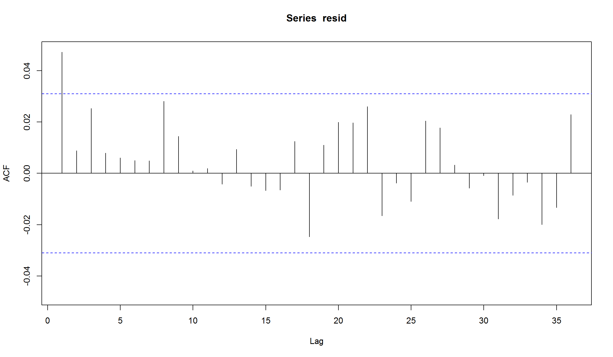
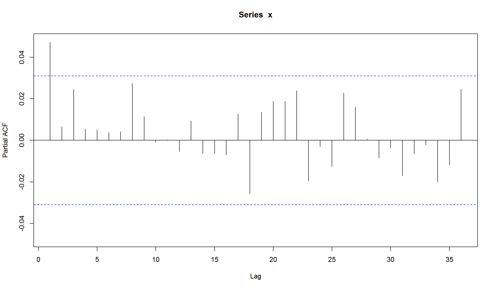
plot(sqrt(252) * fit@fit$sigma, type='l')
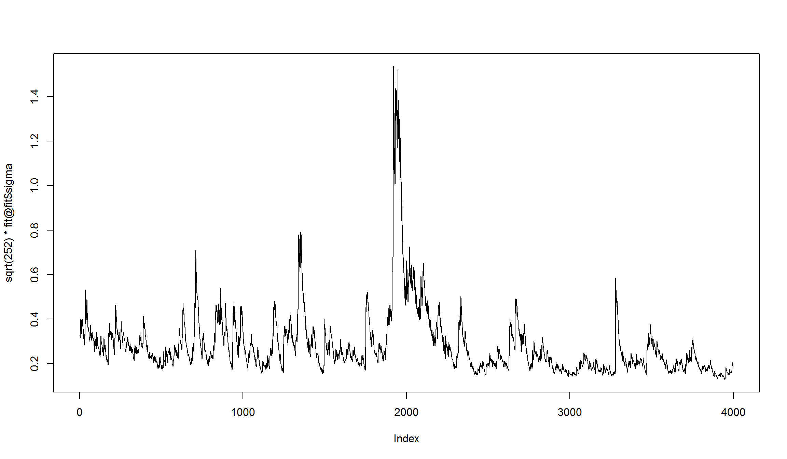
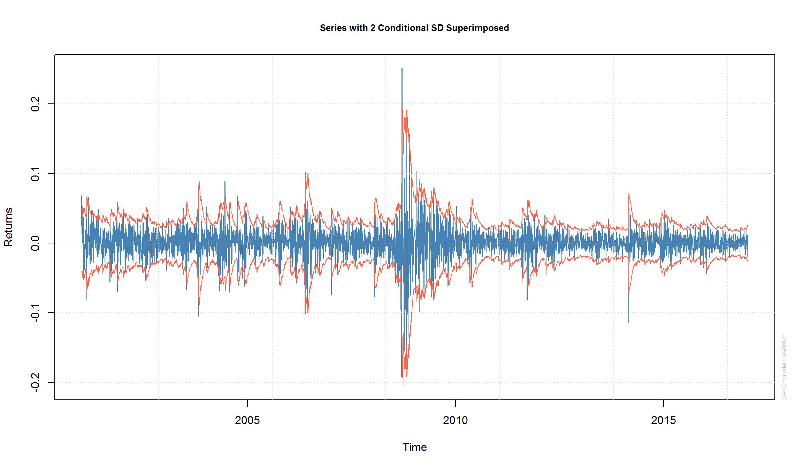
Прогнозирование с помощью GARCH
GARCH модели позволяют строить прогнозы исходной серии и прогнозы для волатильности:
fcst = ugarchforecast(fit, n.ahead=10)
plot(fcst, which = 1) # прогноз для ряда
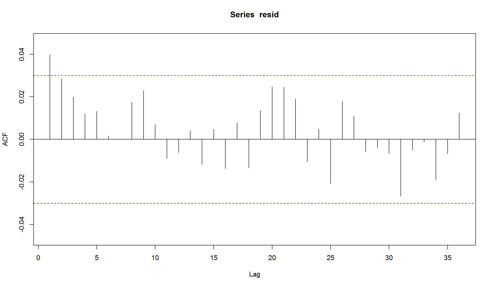
plot(fcst, which = 3) # прогноз для волатильности
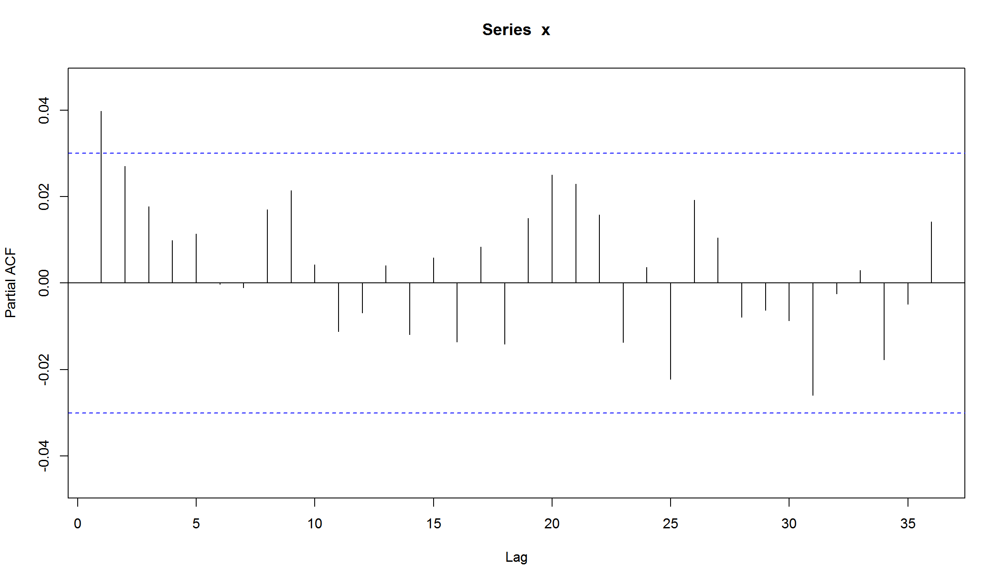
Использованные источники:
- “An Introduction to Analysis of Financial Data with R” (Ruey S. Tsay)
- “Statistics and Data Analysis for Financial Engineering” (David Ruppert & David Matteson)
- Analyzing Financial Data and Implementing Financial Models Using R (Clifford Ang)
- Forecasting Financial Time Series (Patrick Perry)
- Generalised Autoregressive Conditional Heteroskedasticity GARCH(p, q) Models for Time Series Analysis (Michael Halls-Moore)